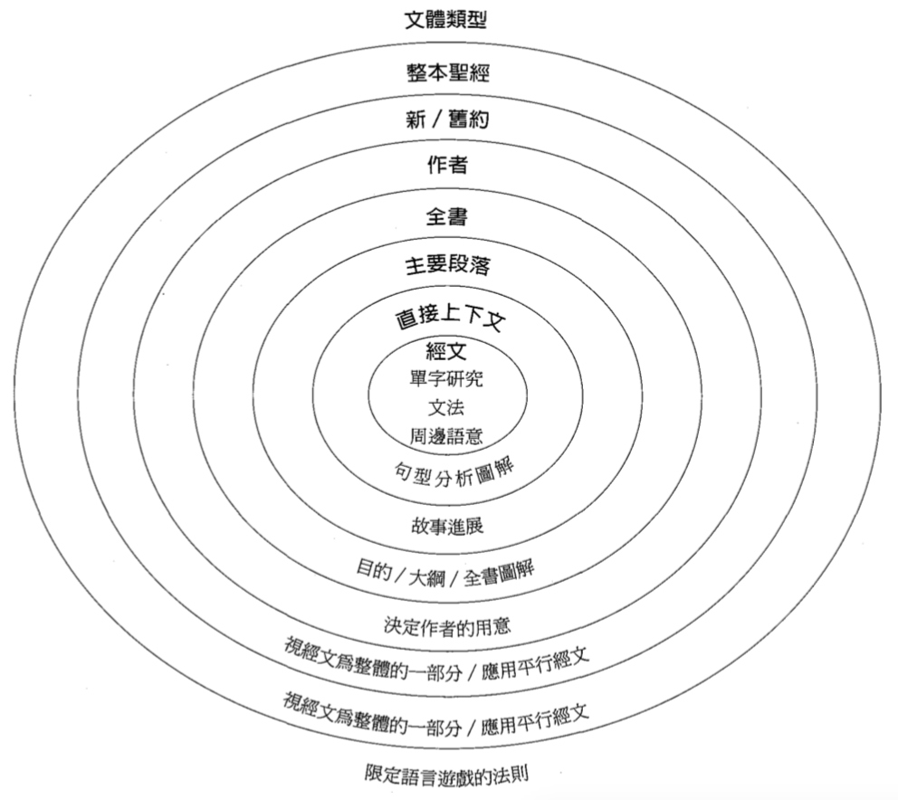
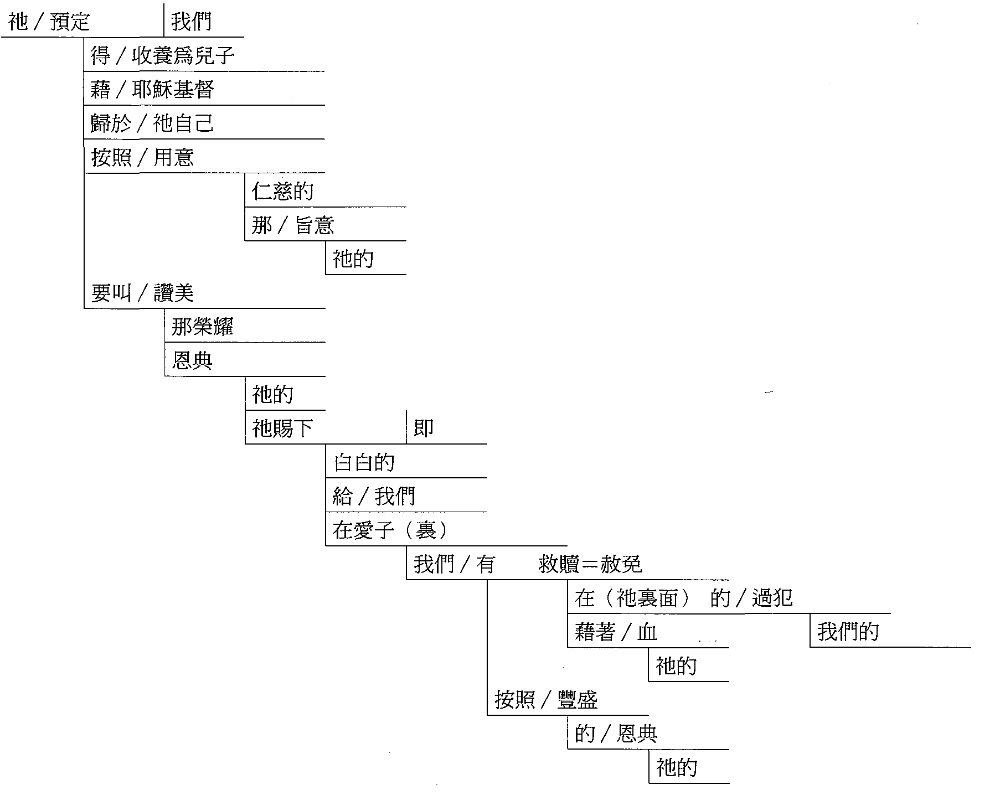
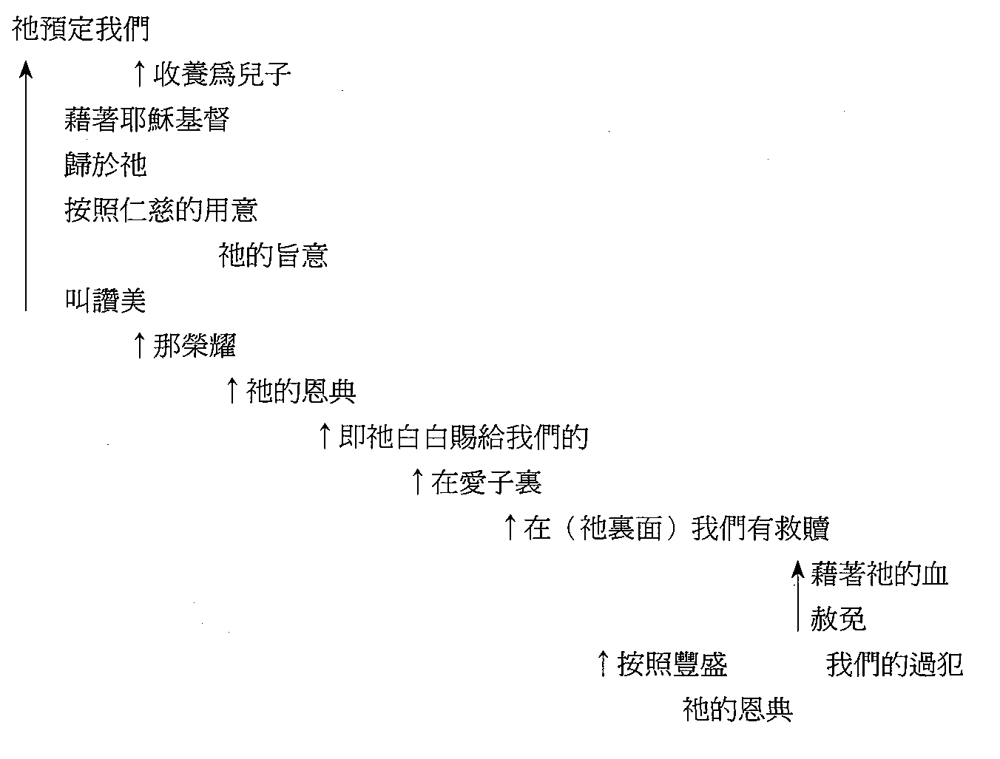
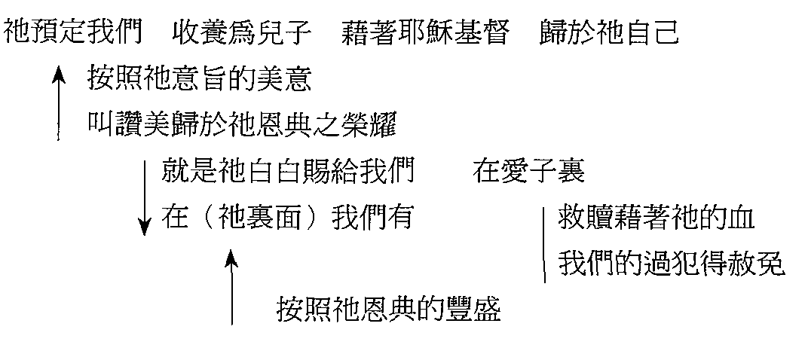
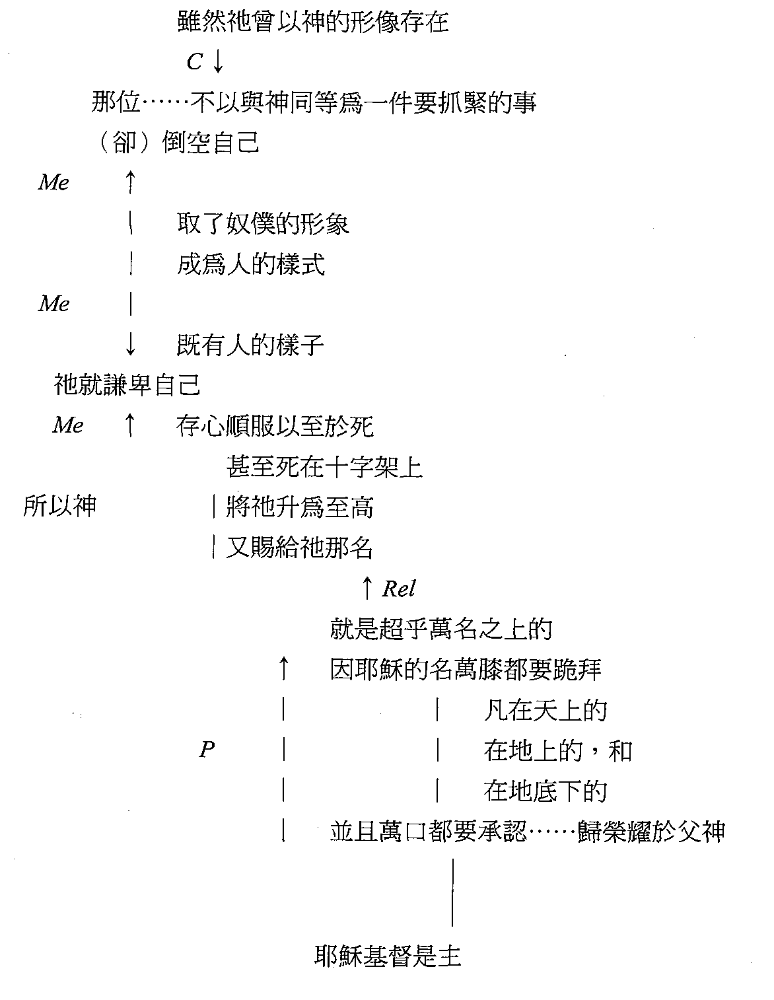

附二意义：解决之道
第1章 情境
Part 1 一般释经学
第1章 情境
要认真研究圣经，第一步就是要衡量一段经文所处的整个情境(译注：在本书中，context译为情境、处境、上下文等）。倘若没有掌握整体的情形，就进行分析，这样开始的第一步，就注定解释必不准确。离开情境，话语就失去意义。如果我说：「你的一切都要拿出来给它。」你一定会问：「『它』是什么意思？」「我要怎么作？」若不说明所处的状况（situation），这个命令就缺乏内容，变成毫无意义。在圣经中，上下文提供了经文所处的状况。事实上，离开了情境，意义就不复存在，所有的只是几个可能的意义。例如：有人大声用英语说：「Right」。但作为听者的你，又怎能知道这话的意思呢？说话的人可能是说：「写（write）下来」，或「往右边（right）看」，或「举行这个仪式（rite）」，或「对（right）」。没有了情境，任何一个意思都有可能是对的。
在研究圣经的时候，有两方面必须先行考虑：历史情境与逻辑情境。第一个范畴，就是研究该卷书导论方面的资料，以判断该书面对的状况。第二个范畴，是用归纳法追踪一卷书的思路发展。仔细分析一段经文之前，这两方面都必须弄清楚。历史与逻辑情境提供了骨架，一段经文的深刻含义必须建立于其上。若骨架不强，解释的建筑必然会崩塌。
历史情境
一卷书的历史背景资料，可以从几种资源取得。最容易到手的，就是较佳注释书中的导论。许多这类注释书都有相当详细的摘要，说明各项问题最新的研究成果。最好是参考近日出版、研究深入的著作，因为最近数十年来资讯爆炸惊人。较老的著作不会提供令人兴奋的考古学发现，或近年有关圣经背景资料的新理论。旧约或新约导论也有很大的帮助，因为它们处理的范围较单卷的注释书更广。第三种资源为字典与百科全书，其中的文章不但讨论书卷，也讨论作者、主
题，和背景问题。考古学与地图让我们能掌握一卷书背后的地志。像约书亚记或士师记等历史书，这方面的资料就非常重要。旧约或新约神学著作〔如：赖德（GeorgeLadd）的著作〕常让我们明白单卷书的神学。最后，介绍圣经时期习俗与文化的书也很有价値，能澄清经文特别强调之事的历史背景。
这个步骤是收集第二手资料，作为解释经文的准备（在开始解析研究的时候会用到）。从这些来源得到的资料，并不是最终真理，却像一张蓝图，是基本计画；当解释的建筑最后搭起来的时候，这个计画可能会更动。这些概念都是别人的，我们以后仔细研究，或许会得到不同的概念。这种预先研读有其价値，使我们能远离二十一世纪的角度，对于经文古代的情况产生更强的警觉心。在此我们需要思想几方面：
1.从某方面来说，作者的问题对历史批判研究比较重要，对用文法与历史来作解析，好像不太相关。可是，这一点仍然可以帮助我们从历史来看一卷书。举个例子，在研读小先知书的时候，我们必须知道阿摩司或撒迦利亚是在什么时候、向哪些人工作，才能明白他们话语背后的状况。
2.写作曰期也是一种解释的工具，使读者能解开经文的含义。如果但以理书是在马加比时期写的，意思便截然不同。如果雅各书是写给公元一一◦年之后分散的团体〔如：狄比留（Dibelius）的理论〕，解释也会不同。针对这两个问题，我都持传统立场，这立场与我对经文的解释密切相关。
3.经文的对象，在文意上也扮演很重要的角色。他们的境遇决定了该卷书的内容。先知书背后的状况（例如以赛亚时代全国的情形）深深影响这些书卷信息的了解。希伯来书究竟是写给犹太人，还是外邦人，或是溷合的教会，在解释上的确有区别。事实上，最后一类人的可能性最大，不过信中谈到的是有关犹太人的问题。
4.在这四方面中，目的和主题对解释最有帮助。在研读任何一段经文的时候，我们对于该卷书面对的问题和环境，都要有基本的知识，也要知道作者是用什么主题来谈这些问题。直到最近，注释家才开始研讨个别书卷的圣经神学。可是这是极有用的解释工具。倘若注意到一卷书的整体观点，对于其中个别声明的解释，就更容易准确。
从这些来源得到的资料，可以作为一种过滤器，将个别经文在其中滤过。在详细的解析与研读经文之后，这些预备资料或许会需要修正。它的目的是将解释的定律规范得更窄一些，让我们所提的问题更恰当，强迫我们回到原初作者的文化，以及经文背后当初的状况。这样，我们就不至于将二十一世纪的意义读入第一世纪的用语中。
逻辑情境
实际来说，逻辑情境是解释最基本的要素。我告诉班上的学生，如果有人打瞌睡，没有听到我问的问题，而倘若他/她回答「情境」，可能有一半答对的机会。这个词本身对经文的影响是一系列的。最佳的图解方式，就是一连串的同心圆，以经文为中心，向外扩展（参图1.1）。
愈靠近中心，对经文意义的影响力愈大。例如，辨认文学的文体类型（genre），可以帮助诠释者认出何为比喻、，可是这一点比不上其他经文对该段经文的影响力。比方说，我们可以辨识出启示录是启示文学；虽然两约之间与希腊的启示文学都可以提供重要的类似之处，但是启示录大部分象徵乃是取自旧约。从另一端来看，一个词彙或观念的意义，最后的仲裁者为其直接的上下文。保罗在腓立比书第一章中用的词，与他在肼立比书第二章中的用法，不保证一定相同。因为语言的运作本来就不是如此；每一个字都有许多含义，作者的用法要视当时的上下文而定，与前一段中的用法无干。aphiemi—字是很好的例子，在约翰福音十四章27节为「我留下平安给你们」，而十六章28节则为「我又离开世界」。两者不能互相解释，因为用法正好相反。在第一处，耶稣给门徒一样东西；在第二处，他则是将一样东西（他自己！）从他们当中拿走。而「赦免」一义，我们更不能按平常的用法来理解（如：约一一9）。其他经文能帮助我们了解语意范围(semantic range，这个字可能有的不同含义），惟有当时的上下文足以限定可能性，指出实际的意义。
图1.1逻辑情境
图1.1也将以下几章包括在内。一般所谓的「归纳法査经」包含几个层面，就是将整卷书作图表，并分析一个段落。归纳法一般是指个人对一段经文专心的研究，不使用其他工具书（如注释书）或资料。我直接进入经文，对它的含义自己下结论，而不是借用别人的结论来了解。这种掌握批判力的方法，使我在必须用注释书和其他材料进一步深入研究经文时，不致过分受到它们的影响。我必须先有定见，再与其他人的结论互动。否则的话，我只是复述别人的意见而已。现成的资料带我进入经文背后的历史情境，而我自己归纳式的研读，则是给我初步的资料根据，来评估各种注释书（「初步」一语极具关键，必须强调；因为研读工具书能够为自我原有的决定提供深度，经常又会作出修正）。1
一、整体的研读：一卷书的图解
过去三、四十年中，文学批判对圣经学界作出了宝贵的贡献。过去注释书提倡的，是个不平衡的方法，过分强调单字研究，甚至字与字之间都显得没有什么关联。然而，文学批判却指出，除非从整体来看，否则各部分就没有意义。惟有先顾及整体，然后才能针对其中各部分、按著中心信息来研究。实际而言，释经的过程可以简述如下：第一，将整本书作成图表，初步分析它的思路猗向；接下来，专注于每一部分，察究论证的细节；最后，再重新调整全卷的思路发展，使其与各部分息息相关。我们的注意力从全书开始，转到主要的部分，再转到其中的段落，最后达到个别的句子。
阿德勒（Mortimer Adler）和査尔斯•范道伦（Charles VanDoren）合写的名著《如何阅读一本书》（How to Read a Book, 1972:16〜20），探究阅读的四个阶段：（1）基础阅读，重点在辨认其中的用词和文句；（2）检视阅读，就是综览全书，找出基本的架构和主要思想；（3）分析阅读，对全书作深入的研究，尽可能彻底明白其信息；（4）主题阅读，即将所得的信息与其他类似书籍作比较，对主题作出第一手的详细分析。前面两个阶段是归纳法，后面两个则是以研究为取向，不单用到原来的文本（原著），也用到次要文本（对该书的解释，或其他人所写相关的书）。
本章要探讨检视阅读法。阿德勒和査尔斯•范道伦将这个方法分为两个途径（1972:32〜44）。第一，翻阅介绍部分（序言、目录、索引），并浏览主要的篇章与段落，以明白全书基本的进展与中心思想。就圣经的一卷书而言，这就包括前言与各段的标题（如果用研读本圣经），再加上熟读重要的几章（如：罗一、三、六、九、十二）。第二，速读全书，不要停下来思想个别的段落或难明的观念。这方式使我们可以明白并记住全书的要点，不致立刻迷失在一些细节中。
我要将这种调查式阅读法的范围再扩展一些，把结构发展也包括在内；我称之为「书卷图解法」（Osborne and Woodward 1979:29〜32）。这时候最好用一本分段良好的圣经。我们必须记住，章节并没有得到默示。事实上是到了一五五一年圣经才分成节，有一位巴黎的出版商，名叫司提番那（Stephanus），他用了六个月将全本圣经分成节，然后出版了他最新的希腊文版。根据传说，司提番那是骑在马背上作这件事，而他分节的依据，是马行进时对他笔的震动！问题是司提番那的工作十分肤浅匆忙，因此很多判断都是错误的。但后来司提番那的版本普及各处，以致没有人敢擅自更动，他的分法便一直沿用到如今。司提番那对章节的分法虽然常有问题，今日一般人却以为他的判断乃是正确的，于是在解释各章各节时，便不顾及上下文。所以，我们在决定意义时，绝不可倚赖经节的区分。分段乃是了解各卷书思路发展的要诀。2
我教导教会团体查经法，时常发现，对初学者而言，最困难的事就是速读每一段，写下重点。大家很容易一头栽进细节，却不懂得鸟瞰全章。在这一步，我们需要从整体来看，学生应当学习用一两分钟的时间（速）读一段，然后用六到八个字来作这一段的摘要。如果我们读得太细，摘要就会只反映全段的前几节，而不是整段。这种错误会使整个研究偏差。因此当力求概括全段。在图1.2和1.3中，我用约拿书和腓立比书作例子，以说明这种方法在新旧约都可使用。3
如约拿书的图解所示，按照顺序，以简短的话囊括每一段，只要顺著摘要看，就可以感受到全卷的思路。而综览整个图解，全书的轮廓便一清二楚。例如，我们很容易看出，第三章成就了第一章原初的目的，就是到尼尼微的使命，以及百姓的悔改。因此，全卷有两处平行，第一与第三章，第二与第四章。再者，重点为后一个平行，因此约拿书的要义不在于宣教，而在于约拿（和以色列）对神的态度，和对神要怜悯之人的态度。第四章是「故事的精髓」，教导神的怜悯。
图1.2约拿书的图解
| 第一章 | 第二章 | 第三章 | 第四章 |
|---|---|---|---|
| 1-3 传道的命令：违逆与逃避 | 1-5 祈祷：约拿的痛苦 | 1-3 上二度命令：约拿顺服 | 1-4 约拿发怒；神发问 |
| 4-12 神的风暴；水手的惧怕 | 6-9 祈祷：约拿的信心 | 3下-9 传道与尼尼微的悔改 | 5-8 神的教导(1)：蓖麻枯萎，约拿发怒 |
| 13-16 水手顺服，抛约拿入海 | 10 约拿被吐出 | 10 神的赦免 | 9-11神的教导(2)：神的怜悯 |
| 17 大鱼呑约拿入腹 |
如果我们将第四章定为「约拿的忿怒」或「忿怒得到回答」，就会错失了要点，即：约拿学到了神赦免的意义。所以，每一段标题都必须抓住该段的要义。不过，我们也必须记得，这只是预备性的综览，在仔细分解之后，若有需要变更之处，还要修改。像约拿书或腓立比书的长度，作综览大约需花四十到四十五分钟。4
现在让我们更深一层，一步步探索如何制作图解。
第一步：速读段落最有效的方式，是拿一枝笔。一面读，一面写下摘要。这样作最能专心。速读一段经文（或稍为仔细去读），最大的问题是心思不集中。我常发现，读完一段之后，我的心却在想当时面对的问题，或当天要作的事，结果必须重读一遍（有时几遍！）。如果我边读边记，强调第一印象，就比较能专心。还有，如果以一句话作摘要嫌不足，我就抓住那段思路的进展（如，腓四4〜7—连串的劝勉；见图1.3）。这时，速读并写笔记的方法便有助益。这步骤的价値为：所作的图解成了地图，可以追踪整卷书的走向。以后再仔细研读各个段落时，我可以一眼就断定某句声明前后的思路。
第二步：在图解全卷之后，就可以回头检査，寻找全书各段中思路进展的模式。我们需要寻找段落之间思路中断之处，并且用单线作记号表示出来（参图1.3）。内容类似的段落组成全书的大段，这样便能看得更准确。有些思路的改变很容易看出，如从保罗对自己的评语（一12〜26）转为论腓立比的情形（一27〜28），或进一步从腓立比人的情形转而称讚提摩太和以巴弗提（二19〜30）。有些改变则不太容易察觉，如从谦卑的提醒（二1〜11）稍微转向警告（二12〜18），或将四章1节与三章17〜21节相连，而不与四章2〜9节相连。至于最后一点，读者暂时只能猜测原因，等到仔细解析全书之后，才能完全澄清。
这就是我为何将约拿书和腓立比书都放在这里的原因。约拿书是圣经中大纲与章的分段符合的少数几卷之一，可以成为简单的范例。
图1.3腓立比书的图解
| 第一章 | 第二章 | 第三章 | 第四章 |
|---|---|---|---|
| 1-2 问安 | 1-4 合一与谦卑，不自夸 5-11 基督谦卑与高升的榜样 |
1-4上 有关犹太派基督徒的警告 4下-6 保罗辉煌的资历 |
1 站稳 |
| 3-8 感恩：为相交与分享 9-11 祈祷：为他们的爱心与分辨力 |
12-13 责任与神赐的能力 14-18 作见证，不埋怨、不相争 |
7-11 为基督看一切为有损 12-14 竭力更多得著基督 15-16 听从的呼吁 |
2-3 祈求合一 |
| 12-14 他的囚禁使福音广传 15-18上 因敌人播扬福音而欢喜 18下-26 无论得释或殉道都将欢喜 |
19-24 称讃提摩太真正的关心 25-30 称讃以巴弗提不顾性命 |
17-21 真假教师的对比 | 4-7 劝勉：喜乐、温柔、为挂虑祈祷 8-9 思想美事并且去行 |
| 27-30 虽遇逼迫仍然同心合意 | 10-13 喜乐与满足，因他们的分享与基督的预备 14-19 喜乐与满足进一步的解释 |
||
| 20-23 颂荣与最后问安 |
约拿书中惟一的问题，是一章17节究竟是第一章的结论，还是第二章的引言。腓立比书就复杂得多，需要更仔细的思想；'是教导式的题材，不是故事或叙述（如约拿书）。这类文字的分段常较突兀（如腓二25〜30，三1〜6），全书的进展也不容易确定。不过，这两个例子的作法，都可以帮助学生了解整卷书的思想进展。
另外一个困难，是找出模式改变的方法。虽然圣经每一段的组织都有意义，但思想模式却往往不容易辨识。司陶特（Douglas Stuart）说：「模式的分辨，在于寻找一些主要的特点，诸如发展、继续、独特的片语形式、中心或枢纽的字、平行、对偶交错（chiasm）、含摄（inclusio）等重复或进展的模式。模式的要诀常是重复与进展」(1980:36;强调字为原书所有）。华德•凯瑟（WalterKaiser）提供了更详细的说明，列出八个发掘思想单位「接缝」的「线索」（1981:71〜72）：
1.重复的名词、片语、子句，或句子，可以成为标题语，引介各个部分，或成为末尾的结语，结束每个段落。.
2.文法常可提供线索，如转接的连接词或副词；例如：「后来、所以、为此、但是、然而、同时」，和希腾文的oun，de，kai，tote，dio。
3.修辞设问常代表转向新的主题与段落。这类问题有时相连成串，将整个论证或一个段落往前带动。
4.时间、地点，或背景的改变，是一种常用的技巧，表示新主题与段落的出现；尤其是在故事中。
5.称谓的改变，通常特意显示：注意力已由某个圑体移到另一个团体；这是最重要的技巧之一。书信式的文字中经常使用。
6.动词的时态、语气等的改变，甚至主词或受词的改变，也可能是新段落的线索。
7.钥字、命题，或概念的重复，暗示一个段落的范围。
8.偶尔，一段的主题会在该段的标题语中出现。在这种特殊状况下，诠释者只需要确定：该段所有的内容都包括在作者明示的目标之内。
9.在我们速读各段、写摘要时，这些基本的模式中断方式颇有帮助。既知道这些可能性，在制作图表的时候，就可以判断思路的转折。甚至在作更详细的解析时，这些中断方式也有用处。
第三步：最后一步是再将各段区分成大单位，以双线来表示。教导类的书卷，如腓立比书，这样做格外有价値。这个过程与前一步差不多，可是思想的单位比段落更大，乃是建造在第二步之上。
然而，这个方法对诗篇与箴言并不适用（个别的诗篇或许可以使用，但是整卷却无法採用）。虽然许多人尝试将诗篇用不同的方法分类，但是以主题来架构的模式太过肤浅。箴言也相彷；直线型发展的部分（如第一〜九章，或三十一章）可以用图解，但是箴言的收集部分，却无法从整体的角度来研究（参本书第八〜九章）。
再者，或许有人会问，这个方式对很长的书卷（如以赛亚书或耶利米书）是否适用？这个问题问得有理。虽然长书卷的图解比较难，但是我衷心相信，这样作很有帮助。容我用一卷书作例子。这卷书不算最长，却是圣经中最困难的部分之一■，那就是启示录。我不作整个图表（请读者自行尝试），而是讨论其结构的暗示（第二、三步）。我们在经文里面寻找模式时，可以看出启示录的组织是天与地之间循环出现。细读启示录就会发现第一、四〜五、七（十）、十四〜十五，和十九章1〜10节是天上的情景，而第二〜三、六、八〜九、十一~十三，和十六〜十八章是发生在地上的事。结论部分（十九11〜二十二2）则将天与地结合起来。此外，在这个轮转的模式中，天上的景象主要是讚美与敬拜，而地上的景象则是愈来愈溷乱、痛苦，神的审判也愈发加重。这个模式最佳的证明，是印、角，和碗的关系。用归纳法的表，我们可以看出，组织模式是相同的。因此，印、角，和碗乃是以循环来组织，特色是审判与毁灭逐渐加强（受影响的程度，六8为地的四分之一，七7〜8为三分之一，十六3〜4为全地）。天上与地上景象的对比，指出全书具合一的主题，即神的主权（垂直方向），并导致水平方面，就是要求教会信靠神，无论目前与未来的苦难为何。5
我要再度强调，这只是初步的大纲，还不是最后的。它代表读者的观点，但不一定是原作者的看法（这需要进一步的研究）。我们必须承认，自己的前提很容易影响对经文的看法。在归纳法的过程中，读者扮演关键性的角色，而若要明瞭作者原初的设计，就必须更进一步研究。然而在解释的过程中，归纳法仍然具有极大的价値，因为能够提供观点。
图1.4以弗所书一章5〜7节文法图解
二、部分的研读：段落的图解
若要像解析较大的单位（一卷书）一样，来图示较小的单位（段落），垂直图比前述的水平图更好用，因为单位小。对不熟悉原文的人，我推荐使用新美国标准圣经（NASB）或英文标准译本（EnglishStandardVersion,ESV）来进行这一类研究。这两个译本虽不如其他译本流畅，可是十分讲究直译，因此最接近希伯来文或希腊文，让我们更清楚看出圣经作者原初的写作模式。图解的样式可以有几种（我们将用弗一5〜7作实验）。许多希腊文解经课都使用复杂的图解（参图1.4），每一个词都要放在它所形容的字底下，两者的关系也要说明(参Grassmick）。戈登•费依（Gordon Fee 1983:60〜76）提出句子流程解析图（图1.5），和文法分析图类似，但没有那么复杂。两者都将主词、述语，和受词放在一页的左角，而将附属词彙缩排，放在所修饰的字或片语底下。戈登•费依建议用注解来说明文法的判断，而用颜色来标示重复的字或主题。然而，有很大的部分是更详细演绎研经的成果，可能得留待稍后的分析。
图1.5以弗所书一章5〜7节的片语或句子图解
我喜欢较简单的方块式图解（图1.6），过于字或片语的图解（图1.4和1.5），因为可以表达子句的层面，较能全面呈现。6另外两个方式将每个字或片语都作图示，而方块图解只图示主要与次要的子句(或长片语）。这三种图，在层次上一个比一个广——字、片语、子句；而子句则是一段话的大块结构。方块法有一些缺失；例如，它不像另外两个图那样能表达细节。然而，方块法有三项优点，足能盖过其缺点：（1）比较简单，花的时间较少；忙碌的牧师或平信徒能够持续使用；7(2）在子句结构中，大部分其他关系（诸如形容词、名词的修饰语、副词，或修饰动词的介系词片语）也能显示出来；（3）句子图解的目的，是将一段经文的思路以一目了然的方式表达出来，而不是要深究文法的细节。另外两种方式，对于目视太过复杂，无法达到这一点。在解析研究中（第二至五章），文法的细节会显露出来，可是在这样的初步阶段，讲究细节不但无助，反而有损。文法最好留到以后的过程再考究。此外，在下面的解析过程，图解就不那么重要，因为是要澄清句子当中的细节，而不是要目视思想的流程。所以，句子图解足以达到我们的目标，不需要详细的文法图解。
国1.6以弗所书一章5〜7节的方块式或直线式图解
在句子图解中，首先要作的，是区别主要子句与次要子句。我们的教育体制很少讲到这方面，实在让人讶异。在希腊文课上，我常问学生，他们最后一次上文法课或句子解析课是什么时候，大部分人从初中之后就再没有接触；有几位主修英语的学生，在大学里面也完全没有碰过！因此，我们不得不承认，我们对这方面的知识非常缺乏。
子句乃是句子中含有主词与述词的部分，例如，「我看见那个男孩」（主要子句）或「因为我看见那个男孩」（从属或次要子句）。以上两句的分别为：第一句可以单独作为一个句子，而第二句却不能。第一次读圣经句子，我觉得最好的办法，是向自己大声唸出每一个子句，看看哪一句为不整全的句子，哪一句可以独立。图解的整个宗旨，就是要将主要和次要的子句分别开来，以便看出思路的发展。
例如，腓立比书二章6节（参图解1.7）。我还是喜欢用直译式的译本，如新美国标准圣经，因为比较接近希腊文和希伯来文，在研经上有好处（当然，懂得希腊文或希伯来文的人，可以直接用原文圣经）。腓立比书二章6节的经文为：「那位（who），虽然他曾以神的形像存在，（却）不以与神同等为一件要抓紧的事。」这里的「那位」引进二章6〜11节的道成肉身伟大讚美诗，因此当视为名词（第5节的「基督耶稣」）。我们开口读这一节，就会发现，「虽然他曾以神的形像存在」，本身并不能独立为一句话，所以它是主要子句（「他……不以与神同等为一件要抓紧的事」）的从属子句。作图解时，我们将次要子句缩入半吋左右.，并用箭头指出它要修饰的子句。
虽然他曾以神的形像存在
那位..不以与神同等为一件要抓紧的事。
许多人喜欢将修饰子句缩排在所形容之字词的下面。这方法在视觉上效果不错，可是我感到颇难使用。许多从属子句是修饰一个子句的最后一个字，用这个方法会占用很多空间。此外，保罗很会用回旋式句子，例如，以弗所书一章3〜14节就是一句话，其中的结构复杂得不得了。用这种方式图解，一张纸绝对不够，需要用八尺宽的纸！我觉得比较好的方法是缩入半吋，并将箭头放在要修饰的子句底下。
图1.7 腓立比书二章6〜11节的图解，附语法关系记号
在方块图解中，有几方面需要注意（图1.7）。第一，箭头要指向所修饰的词，而从属子句或片语比要修饰的子句缩进半英吋。第二，缩排子句经常会一连串，因为会有次要子句修饰另一个次要子句的情形。这就是句子图解的主要价値所在，因为它可以使这种复杂的关系一目了然，增进我们对思路进展的了解。第三，平行子句或片语要以箭头（如果是从属的，如以上弗一章5〜6节的两个介系词片语）或直线（如果不是从属的，如第7节的两个名词）相连。以弗所书一章5〜7节有四个连续的从属关系。倘若以横接的方式来写，需要很多空间；而用箭头，就简单又有效。箭头也使我们能顺著经文的顺序，避免搞溷。8次要子句若在前面，箭头就朝下（参图1.7），若在后面，箭头就朝上（参图1.6）。
在圣经中辨认子句最有效的方式，也许是研究连接词。对圣经研究而言，这一点尤其真确，因为希伯来文和希腊文经常使用连接词。我们必须问，它是否为对等连接词（以及、但是、可是、既……又……不但……而且……、不是……就是…因此、因为、于是）9——衔接平行句或主要子句，还是从属连接词（除非、之前、之后、同时、当时、自从、因为、即、如果、虽然、虽、以致、为要、除外、如同、那么、那里）——衔接修饰子句。
我们也可以陈明从属的关系，就是用一些记号来代表各种语法关係（如，T代表时间〔temporal〕，Ca代表原因〔causal〕，Cn代表让步〔concessive〕，Cd代表条件〔conditional〕，R代表结果〔result〕，Rel代表关系〔relative〕，P代表目的〔purpose〕，Me代表媒介〔means〕，Ma代表方式〔manner〕，I代表工具〔instrumental〕）。这些记号可以写在箭头旁边，如此，一眼就可以看出这段经文中从属子句的模式。我要以腓立比书二章6〜11节整首道成肉身的讚美诗作图解示范（参图1.7）。10
这个图使人一眼看出，主要的两段是耶稣的行动和神的行动。在前者之下有三个基本概念：耶稣的顺服、倒空和谦卑。在后者之下只有一个主要概念——神升高的行动——以及两个次要概念——万膝都要跪拜和万口都要承认。我们立刻注意到，这可以成为初略的讲道大纲。事实上，方块图解可以成为讲章或查经的初步纲要。在查看图中的子句模式时，也可以马上看出哪些是主要子句，哪些是次要子句(正如我们在腓二6〜11所见。图1.7）。
不过，在此要提出两项警告：第一，大纲就像图解一样，乃是初步的，仔细解析经文之后，可能需要更改。第二，句法的关系固然对判断思想的主要部分很有帮助，可是却不能自动作出判断。子句常有平行现象（如7〜8节的倒空与谦卑，或10〜11节的跪拜与承认），必须结合成为一个要点。还有一件事也很要紧，有时在作者的实际思想发展中，文法上的从属语和主要子句同样重要，甚至更重要。保罗在这方面最出名。如果从属概念有详尽的说明，就是一个记号，表示作者认为这是要点。例如，腓立比书二章2节说：「要有同一个心思、同一份爱、在灵里合一、思朝向同一个目标，使我的喜乐满足」。显然，这里最要强调的并不是使保罗的喜乐满足，而是腓立比教会的和谐；连续四个从属子句说明了带给保罗更大喜乐的途径。在讲道大纲中，要点应当是和谐，而不是喜乐。同样，在肼立比书的讚美诗中，保罗用了两个从属子句来修饰倒空（7节）和谦卑（8节），显示保罗实际上是在强调道成肉身（「成为人的样式」）。
传道人应当从直线图发展出讲道大纲。最佳的方法，是与图并排，对照重点。在这个步骤中，讲道大纲就像查经材料一样。可是我在十五章中会提出，在一篇解经讲道中，经文应当主导其架构。如果我们主控经文，勉强它来配合自己预先想好的信息，就不是在传讲神的话，而是在分享我们的想法。所以，大纲必须配合经文的架构：
一、谦卑的光景（肼二6〜8）
A.心思的光景（6节）
1.他的本体
2.他的决定
B.存在的光景（7〜8节）
1.他的道成肉身（7节）
a.他的本体
b.他的形像
2.他的谦卑（8节）
a.他的样式
b.他的顺服
二、高举的光景（腓二9〜11）
A.被神高举（9节）
1.他的新地位
2.他伟大的名
B.被人类和万物高举（10〜11节）
1.藉服从来高举（10节）
2.藉承认来高举（11节）
a.宇宙性
b.内容
c.结果
这仍然只是初步的大纲，要等到解析全部完成后，才能定案。到那时候，经文可以转变成满有动力的讲道模型（参本书第十八章；Liefeld 1984:115〜20）。不过到目前为止，我们对腓立比书二章6〜11节的研读非常有意义，不但作出了未来查经或讲道的大纲，也提供了可能的信息。除了本段，只有约翰福音一章1〜18节对道成肉身和基督的高举有如此深刻的神学反思。11在前半段中（6〜8节），三个主要子句都提到道成肉身的时刻。第一处是从负面来讲，耶稣拒绝神性的特权与荣耀（6节）；接下来是从正面谈倒空与谦卑，耶稣将他的人性（「奴仆的形像」，7节，与8节相较）加在袖的神性（「神的形像」，6节）上。这种仆人基督论，成为基督徒行为的模范或准则（注意5节），高举的段落（9〜11节）因此更显得动人。我们若像基督一样「谦卑自己」（与3节比较），神就必将我们高举，分享基督的荣耀。当然，我们并没有「超乎万名之上的名」。若分享耶稣的谦卑，就将分享他的高升。
但旧约经文是完全不同的。我们首先会注意到，旧约经文缺乏从属子句。由于希伯来文不太使用连接词，图解旧约的帮助便不像新约那么大。诗体和叙事经文大多都是主要子句。在散文中，主要的连接词（即「以及」）子句占多数。所以，我们必须寻求修辞的模式，并注意思想有否改变。在这时候，直线式的图解仍有帮助，因为将句子并排。
修辞或写作模式
制作一段经文的思路结构图解时，常会碰到修辞学的技巧，也就是传达信息的文学方法。这便是概念的第三种情境，也是最后一个层面；这三个层面分别为：全卷书组织模式的宏观层面、分段的中间层面，与各段之内的写作技巧。以下四章要探讨的题目，就是这种微观的层面（经文用字的详细结构）。
我们可以参照亚里斯多德（Aristotle）对修辞学的经典定义：「讲究如何以最佳方式说服人接受某个思想的艺术」（Kessler 1982:2）。修辞学的研究，常与形式（文体）和功能（组织技巧）溷为一谈。12修辞学最经典的四种分类为西塞罗（Cicero）所定，即：虚构、编排、体裁，与记忆的技巧。风格并不在这些范围之下，因为按定义而言，「修辞批判」（rhetorical criticism）主要是在谈沟通的技巧，换言之，就是谈作者表达论点的技巧与组织f吴式。克斯乐（Martin Kessler）主张，在修辞的分析中，最重要的乃是与历史无关的一面——亦即与经文本身相关的一面（1982:13〜14）。在本段中，我採用这个观点来看经文的结构，并探究圣经作者（及其他人）用什么文学技巧来串联他们的论点（其他类型的修辞批判，参第四章的附录188〜95页）。
概念或思路之间可以用许多不同的方式关联。但是要详细分类，却有困难。我的办法是把迈尔（B.J.F.Meyer）和莱斯（G.E.Rice），以及尼达（EugeneNida）、卢奥（S.P.Louw）、斯努曼（A.H.Snuman）、克龙捏（J.v.W.Cronje）的努力结合起来。13这种分类相当重要，因为能帮助我们研究圣经中个别的结构；对这些形式若有基本的了解，在研读不同段落的时候极为有用。所以，我将用圣经的例子来说明每一种修辞方式。
1.集合关系（collection relations，Nida:「重复」，Liefeld:「连续」）是按照要点相同的基础，将概念或事件连在一起。这是古代常见的修辞方式。拉比称它为「串珠」，常将弥赛亚的经文放在一起。这个方式可以说明希伯来书一章4〜14节，这些串在一起的证明经文分别取自诗篇二篇7节；撒母耳记下七章17节；诗篇九十七篇7节，一0四篇4节，四十五篇6〜7节，一◦二篇25〜27节和一一0篇1节。14马太福音与五段讲论，也有类似的集合；例如，在使命讲论中的末世性段落（参太十16〜22与可十三9〜13）。有时，一些看似互不相干的系列，会以标示语相连。马可福音九章33〜50节就是讲论奖赏与责罚的文集。这一段是围绕著「奉我的名」（37〜41节）、「跌倒」（42〜47节），及「盐和火」（48〜50节）来组织的。
重复的组织法，可以用在读音或概念两方面。尼达指出，希伯来书一章1节中有五个希腊字都以^开头，而/出现了五次，还有两个副词以作结尾。这是一种加强记忆的方式，也使整个声明显得更有力。类似的模式也出现在八福（太五1〜13）、约翰一书写作目的之说明（约一二12〜14），以及启示录第二〜三章给七个教会的信（其实是「制式信件」；formletters）。概念的重 复就更常见。在第八章，我们会多谈希伯来诗体的对偶形式，不过在此可以先指出，散文中的对偶形式也像诗体一样常见，新约和旧约皆然。这是圣经中最常见的修辞方式。许多解经的基本错误，是强调一系列同义词中，各个用语的不同含义；例如，约翰福音二十一章15〜17节所用不同的「爱」字，希伯来书十章8节不同的祭，或腓立比书四章6节对祈祷的不同说法。我们总要警觉，使用不同用词或片语的原因，有可能只是文学的技巧，并没有神学的含义在内；重复或许是为了强调，我们不需要去强化各个用语之间的差异。
2.因果（cause-effect）和问题—解决（problem-solution）的关係，是先有某个动作，然后有某种结果。15我们可以举无数的例子。先知对以色列的斥责，经常是採用因果方式。例如，阿摩司书二章6〜16节开始为原因（「以色列人三番四次的犯罪」，6节），接下来则一一列举罪状（6下〜13节），最后的结论为审判（或后果，14〜16节）。先知的弥赛亚应许，则可作为问题一解决的例子。问题是以色列公义的馀民与背叛者一同受苦。神为他们预备了一个解决方法：他应许「不将雅各家灭绝淨尽」（摩九8）。罪人将死亡（九10），但神自己却将「建立大卫倒塌的帐幕」（11节，这意象取自住棚节）。
与此类似的是问题-回答的模式，保罗和先知都经常使用。在罗马书尤其常见。保罗会提出一个修辞的问题（将他对手的看法表达出来），接著便回答这个错误的观点。类似的问题也引介出因信称义(四1〜2）、与基督联合胜过罪（六1〜2）、律法与罪的问题（七1〜2、13）、神的拯救意图（八31〜32），和神的公义（九19〜24，十一1〜2）等讨论。
在这个范畴内，我们也可以放入目的与结果或证明。这些都是在回答「为什么」。目的将秩序倒转过来，说明原初的用意，而不单单只讲结果为何。这两者（目的与结果）常常难以区分，不过诚如李斐德所说：「从神眷顾的角度来看，这两者的差异常并不重要」(1984:69）。无论我们翻译成「为了」（以未来为重点）或「因此」（以过去为重点），都是在强调神对全局的掌控。连接词「因为」常常带进类似的神学观点证明。例如，罗马书八章29〜31节说明，我们为什么可以知道「万事互相效力」（28节）。神已经预先知道他的子民，并且预定他们、呼召他们、使他们称义、得荣耀。换言之，神在掌控，所以我们能信靠他。
3.比较（comparison）是显示概念的相似之处或差异之处。最著名的例子是罗马书五章12〜21节，亚当与基督的对比；两者都作为一群人的代表（注意15节的「一人」与「衆人」），或是有罪的人，或是基督徒。我们也可以举罗马书七章7〜13节（过去式）与七章14〜25节（现在式）两种关系的辩论为例。究竟这两段是讲未重生到重生的状况，还是过去的以色列到现在的以色列的状况（Moo1986），我们必须作一判断。箴言亦有许多智慧与愚昧相对的话，如一章7节，十五章5节等（参本书第九章有关箴言的解释）。
有些学者将交替（interchange）列为另外一段，但事实上，这只是比较的另一种变化。交替不是直接的比较，而是轮流谈论人物、事件，或类别，以制造主题的比较。约翰将彼得否认主（十八15〜18、25〜27）与耶稣在亚那（19〜23节）和彼拉多（28〜40节）面前如一的勇气穿插写来，便是最佳的例子。彼得的胆小和耶稣的勇敢成为鲜明的对比。在上文所提的亚当与基督之例中（罗五12〜21），也有轮流的方式。
4.描述（description）是很广的范畴，就是用进一步的资料澄清一个题目、事件，或人物。这方法也可称为连续（参Osborne和Woodward1979:70〜71），它与重复不同，因为它将讨论「延伸」，而非「复述」。这种技巧之例，如约拿书一章4〜17节作为他逃跑（一3）的后续描写；或亚伯拉罕所蒙的祝福（创十三14〜18）在十四章1〜18节有进一步的描述。另一个例子，是基督在路加福音十四章28〜32节用了两个比喻，澄清门徒「计算代价」的重要性（26〜27、33节）。那里的信息为：若不清楚结局为何，没有人敢前来作门徒。这些比喻生动地描绘出，倘若一个人想要作门徒，却不「背起他的十字架」（27节），将会如何。基督要求人与世界完全断绝关系（33节）。
总结（summation）的原则也可放在这个范畴，因为经常是在一长段的描述之后，将全文打一个结，说明最基本的主题或结果。当然，分辨这种技巧，对判断一段经文的基本要点很有帮助。有时这类摘要出现在一段经文的头尾，例如约书亚记十二章7、24节：「约书亚
和以色列人击败的诸王如下，……共计三十一个王」。多半时候，摘要出现在最后。在历史书中，这类摘要或「接缝」，有助于题材与主题的衔接。例如，使徒行传的摘要，含括了路加最主要的神学看法，就是在教会面对的一切危难中，神的灵都能得胜。尽管有内部的分争（六；!〜6与7节）、外在的逼迫（八i〜九30与31节）、暴君的迫害(十二1〜23与24节），及异教的问题（十九13〜19与20节），但每一项摘要的中心，都是「道」的「增长」（这个术语一方面是指福音的宣扬，一方面是指其成功的结果，就是教会的增长）。
与摘要类似的，是犹太人首尾呼应（inclusio）的技巧，就是讨论到末了，作者又回来提他最初讲的观点。这个方法将一路发展过来的基本观念覆述一遍，成为整个叙述的总结。最好的例子之一为约翰福音一章18节，那里是约翰福音序言的结论，且是一章1节主题的重复，即耶稣是神的彰显，并一直与父同在。雷蒙•布朗（RaymondE.Brown）也注意到约翰的首尾呼应，如迦拿的两个神蹟（约二11;四46、54）、约但河外（约一28;十40），还有逾越节的羊羔（约一29;十九36）(1966:cxxxv）。犹太作家强调主题的另一个技巧，是对偶交错法（chiasm），就是在连续对偶的子句或段落中，将字词或事件倒转过来写。当然，旧约中经常出现这方式；以赛亚书六章10节ABC:CBA的结构便是一例。
对偶交错法在新约也很常见。隆德（Lund）认为，哥林多前书五章2〜6节，九章19〜22节，-[^一章8〜12节等处，都有这现象(1942）。雷蒙•布朗主张，约翰福音六章36〜40节和十八章28节至十九章16节都用到对偶交错法，他的论证颇具说服力（1966:276;1970:858〜59）。
5.期待的转变（shifts in expectancy）包括多种写作技巧。如尼达所说：「这些技巧的义蕴，就在于读者可以看出字的顺序、句法的结构，或一个字、词、句子颇不寻常」（1983:36）。从某方面而言，这个范畴非常宽广，可以包含修辞设问、重复法或对偶交错法。此外，
它显然与喻象语言重迭（我们将在本书第四章谈这方面）。不过，这类修辞方式超越了喻象语言，是一种破格文体（anacoloutha，如尼达的说法）。然而，这类转变在结构的强调方面算是一项重点，所以必须包括在这里。耶稣的告别谈话（约十四〜-h六）中，有许多这类转变，因为数目太多，以致有些学者认为整段没有合一性，而是一系列重迭的传统，零乱地串在一起。结果他们提出约翰福音的「循环论」，或系列编辑说，主张这些人强将合一性加在第四卷福音书上，造成困惑（opohm），就是结构的不一致。不过，最近有一篇重要的文章发表，作者魏伯斯特（EdwinC.Webster）辩道：「这卷福音书，从文学的整体来看，结构十分严密，最基本的结构为对称的设计与平衡的单位」（1982:230）。魏伯斯特注意到，第十三至十六章中有两个同心圆的段落，每一处都可分为三段（1982:243〜45）。
| 一、耶稣与门徒 | 二、门徒与世界 |
|---|---|
| 1.耶稣洗他们的脚；他的榜样(十三1〜20） | 1.葡萄树与枝子的隐喻；他爱的榜样（十五1〜16） |
| 2.犹大的离开（十三21〜32） | 2.世界的憎恨（十五17〜27） |
| 3.耶稣离开的对话（十三33〜十四31） | 3.耶稣离开的对话（十六1〜33） |
魏伯斯特主张，第十四章与十六章的主要部分有对偶交错的关係，可以用来解释重复的主题。现代读者很难看出这种转变，可是古代人却很容易察觉和了解。如果我们明白整个结构的发展，困难便消失了。换言之，这一段并没有笨拙的不协调或重复，而是仔细设计的讲论。
高潮（climax）与关键（cruciality）也属于这个范畴。前者出现在故事中，后者则在书信中，不过两者都有相同的功能，即将作者基本论点的中枢或转捩点显示出来。医治被鬼附的孩童（可九14〜29），高潮并不是神蹟本身，而是那位父亲的呼喊：「我信，但我信不足，求主帮助。」这是马可作门徒主题的中枢，也成为第18〜19节门徒失败的矫正，以及第29节信心祷告之必要前提。李斐德举了一个极佳的高潮例子，就是马太福音四章1〜10节和路加福音四章1〜12节中，试探不同的顺序（1984:63）。马太的故事，结束的高潮为世上万国的试探，这样的强调与他以弥赛亚为王的主题相配。路加则以圣殿的殿顶试探为高潮，因他的中心是圣殿，特别强调基督教来自犹太教，这是他福音书的主题之一。两个故事的高潮，都是了解神学重点的要诀。
最后，我要在此把尼达对省略（omission）的探讨（1983:33〜36）也加进来。倘若某位作者刻意删去读者预期的某一点，就造成「预期的转变」，让人惊异，也有强调作用。通常这类经文会省略特殊的字（如林前十三4〜7中的kai，或来一5、S、10前言中的koi）。但是，偶尔会出现一种情形：原来的读者能明白为何会省略掉关键的字句，可是现代诠释者却感到非常头痛；例如，「那拦阻他的」（帖后二6〜7）或「六六六」（启十三18），在解释与指认上的省略。对这两者的解释理论有上百种之多，可能我们要等到主再来，才能明白真正的意义。
第2章 文法
第2章 文法
解经(exegesis）意思是从一段经文中「找出」含义；这与「私胃#意解经」（eisegesis）不同，后者乃是将自己的意思「放入」经文中。解经的过程是释经学理论的核心，这是个复杂的过程，首先要判断作者原初的意思〔这样作的可能性，参附篇（一）、（二）〕，然后再将经文应用到自己的生活中。这项使命的两方面（意义与义蕴）不能分离，因此，意义取决于现代的观点，或诠释者视为重要的角度。然而，就释经学的整体而言，它们乃是不同的两方面，因此我们要用第二到第五章来讲一般释经学（就是找出意义——圣经「原意」为何），而用第十五至十八章来谈应用释经学（就是发掘义蕴——圣经现在对我们要说什么）。金容得（WernerJeamond）称这些为不同的阅读角度，亦即不同的目的或目标，彼此并不排斥，可以一起发挥作用，增进我们的了解（1988:126〜28）。1解经又可以细分为语言与文化两方面。前者是界定词汇或观念，这是命题式话语的要素。后者是探讨这些话语的历史和社会背景。
第二至四章将讨论语言研究的三方面。文法是本章要谈的题目，指词汇表面结构背后的语言基本法则。语意学（第三章）探讨个别的字在句子中的作用，及其意义。句法（第四章）研究句子单位的转换，以及整个信息在不同文化情境中如何发挥其意。换言之，句法是关注「转换语法」〔transformationalgrammar，丛斯基（NoamChomsky）的说法，处境的发展会改变沟通的过程〕。换言之，第二、第三章是关乎言内之意（即意义或信息）。第四章则是言外之意(经文的作用），第十七、十八章则为言后之意（经文如何影响读者）这三方面互相倚赖，并不能单独成立。不过，我们仍将分开来思考，因为它们的语言规则各不相同。诠释者在研究表面结构（句子）时，却必须同时思考这三方面，才能说明原初的含义。
当然，不明白原文的人，在处理文法和语意时，难度一定更大。以下的材料大半假定对希伯来文和希腊文有基本知识。不过，倘若不了解原文，并非完全手足无措；只是必须倚赖第二手来源，主要是翻译和较佳的注释书。我建议，不妨用底下的资料来衡量注释书。许多较古老或资讯不够充分的书，在探讨时态、语气等问题时，所作的结论可能在基本上会有错误。当注释者为某些论点争辩时，本书的文法资讯可作参考。另外一个建议，是背下希伯来文和希腊文的字母，然后买对照本圣经，就是希伯来文或希腊文与英文并列的版本（通常在每个希伯来文或希腊文之下，都有相对的英文字）。海斯（Hayes）与贺乐戴（Holladay1982:58）建议善用经文汇编（如Strong或Young两部作品），这类书列出了英文背后的希伯来文或希腊文，并且有编码可与附篇或字典参照，其中有原文意义的说明。最后，将几个不同译本互相参照，看不同的翻译会如何翻译各段经文，也是一个办法。总之，希望以下的内容不单可以帮助有原文训练的人，也可以辅助缺乏这种背景的人。大概没有什么文字，是比本章更乏味的了。最好是把它当为遇到文法问题时参考的工具书。
初步工作：确定经文
开始认真解经之前，首先必须确定经文。旧约和新约都有许多抄本，有时读法相当不同。有两种方法可以帮助我们确定原初的读法为何：第一，经文鑑别学（textcriticism），就是比较各种读法，并决定哪一种可能是其他读法的基础。第二，要决定某些字或片语是跟著前文，或是属于后文（在研读旧约时十分常见）。古代没有标点符号，字与字之间也没有间隔。再者，希伯来文不用母音。许多时候，一个字母可以是前一个字的后缀，也可能是下一个字的前缀。有时，「在爱里」之类的片语，可能属于前一个子句（弗一4〜5，KJV），也可能属于下一个子句（弗一4〜5，NIV）。
经文鑑别学有其必要，因为每个译本对某些经文的翻译都不一样。例如，马可福音的结尾，英皇钦定本（KJV）译文较长，但是近代的译本，如标准修订版（RSV），新美国标准圣经（NASB），新国际本（NIV），和新当代圣经（NewLivingTranslation,NLT）都较短。
要判断何者为正确的读法，经常十分困难。我们必须记住，在犹太教和初期教会中，直到很晚才有专业的文士出现。在新约时期，抄写经文者都是业馀人士，所以会犯的错误可想而知。2他们会增删字、改换读法、将困难的文法变为容易。再加上目视的错误、前后倒转的字母，和刻意更改以加上重要的神学观点，或协调表面的冲突等。事实上，现代校对者能发现、纠正的各种错误，古代圣经的校订版中都会出现。
此外，经文鑑别乃是一种无法准确的科学。在一九四七年之前，旧约研究列出三大主要的经文传统：3马所拉经文（Masoretic Text,MT）由马所拉学者制定，他们是主后第六世纪到第九世纪的犹太学者，将母音加入，使口传的传统法典化；七十士译本（Septuagint,LXX）是主前第三至第一世纪的希腊文旧约译本；撒马利亚五经(Samaritan Pentateuch,SP）是示剑的撒马利亚教派正式的圣经版本。至于他尔根（亚兰文的意译本，参第十四章）、别西大（Peshitta，叙利亚译本），和武加大（Vulgate，耶柔米的拉丁译本），则被视为次要，可反映出以上主要的传统之一（参Klein 1974:59〜61）。昆兰(Qumran）书卷最初发现时，大家以为可以增强七十士译本的重要性，因为昆兰的材料中有几处「LXX读法」的字样。所以，在证据的修订方面没有什么改变。但是最近对传统看法的挑战，却使经文「类型」（type）的问题不得不重新提出来讨论。
托夫（Emanuel Tov）证实昆兰经卷与七十士译本之间的关系，不像从前所以为的那样具说服力，因为差异处相当多，甚至超过相似处，而昆兰经卷与七十士译本都有相同之处，又有经文类型的差异（1980:45〜67;1982a:11〜27）。托夫认为这些所代表的，不是经文的类型，只是经文本身而已；每一段经文都必须单独研判其外证，不能透过某种外在标准来作评估（参照以下的说明）（1981:272〜751;1982b:429〜34）。不过，他承认：「大体而言，马所拉经文的读法比其他来源更値得尊重」（1981:287）。4此外，托夫也同意，昆兰经卷在许多地方的确支持七十士译本。所以他甚至说：「在评估读法时，并没有相关的外在考量可以运用」，「在评估逆转的差异时，内在的标准是惟一可靠的标准」（1981:286,288）;但这种看法太过分了。他证明了经文类型三分法只是一种假设，这一点可算相当成功；可是他却无法指出外在标准全然不可靠。所以，我们只需要承认这类结论是假说，就足够了。
一般认为，新约的经文鑑别比较稳定，因为抄本很多（超过五千），而且有不少学者出版了许多相关作品，如十九世纪末的魏斯科（B.F.Westcott）与霍特（F.J.A.Hort），和较近代的阿兰德（KurtAland）和麦子格（BruceMetzger）。抄本也分为经文类别（textfamilies）或类型，分类的根据为变动的方式，可是更常依据地理位置：亚历山大城、该撒利亚，和拜占庭。不过，虽然比较稳定，但魏斯科和霍特所提出的折衷取捨法却受到挑战，以致其结论不得不作调整。第一，倡导「多数经文」之人（诸如Pickering和Hodges）主张，大多数经文都符合伊拉斯姆（Erasmus）所译「公认经文」（TextusReceptus，TR）背后的版本〔即钦定本（AV）译文所根据的译本〕，而经文类别法忽略了许多教父所用的TR读法。虽然这个挑战应予重视，我却同意卡森（D.A.Carson,1979）和戈登•费依（GordonFee，1978）的看法，即：折衷法的理由更充分。第二，许多学者同意，经文鑑别的整个方法已经过时，需要检修，而经文类型的证据尤其可疑。今天许多人承认，其中大部分的决定都只是假说，十分主观。5我们在使用证据时，必须十分谨愼，多方考虑。
旧约与新约的经文鑑别决定方式有许多类似之处。所以，我只介绍一套标准，而用的例子则取自两约。主要必须记得一件事：任何一种标准都不能证明某种读法。所有的差异都需要经过一切标准来衡量，最可能的读法，就是最能配合所有标准的那一种。
一、外在的标准
外在的标准是与文件本身相关的规定。这些规定可以衡量各种不同读法的分佈状况，判断经文所属抄本的价値，并侦测出经文传递习惯中的「偏见」（倾向）。许多人像托夫一样，认为这种标准的价値不太大，因为这类判断只具次要性，依附于各种抄本日期与地理位置的决定。当然，这一点颇有道理，因为无论任何一本抄本，在变动上，模式的差异都相当大。可是，以研究抄本为主的人士却声称，个别读法的品质，基本上的确可以「分级」，只要承认这类决定会含有主观的成分。6当我们要研究某段经文原初究竟可能是怎样的，最好採用以下的步骤。
1.决定经文来源大致的曰期。新约比较容易做到，可是对旧约也有价値。例如，他尔根的旧约「圣卷」部分日期较晚，而七十士译本本身需要先作经文鑑别，然后才能与其他译本比较。符特万（Ernst Wurthwein，1979:114;参12〜27）与托夫（1982b:438）定出这个规定的主要例外：马所拉经文是旧约主要译本中最晚的，可是同时又是最可靠的，亦即它包含了最古老的传统。昆兰现存最古老的抄本（如：lQpHab），许多都经过大量的修改，主要是因为该圑体有特殊的神学倾向；而其中有一些（如：1QIsa）则非常准确。换言之，愈早的抄本愈可靠（两约皆然）。新约抄本的日期是很准确的科学，有些抄本的曰期相当接近第一世纪。例如，波德莫蒲草卷二（Bodmer Papyrus II，P66）有约翰福音十四至二十一章的一部分，日期大约为主后二百年，比较接近福音书写作的时间。前面已经提过，愈早的抄本不见得一定比古老的抄本更优秀；不过十分有用。
2.决定不同读法背后抄本的时间与地域之分佈。如果某种读法出现在初期教会几个重要地点的主要抄本中，就很可能是原作。当然，这必须与第一个标准配合。例如，马可福音的长结尾（十六9〜20），在亚历山大城读法（西乃抄本、梵谛冈抄本）、古拉丁文波便西斯抄本（Codex Bobiensis，itk）、几种亚米念（Armenian）抄本、及俄利根（Origen）和优西比乌（Eusebius）的经文中，都从缺。所以，大多数学者怀疑它的真实性（即它可能不属马可福音原著的一部分）。
3.决定每种读法背后抄本的系谱学关系。这是所有标准中力量最弱的，因为它是根据经文类型的理论而来。在理论上，出现于几种类别的读法，比只出现在一种类别的要强。在旧约研究中，符特万（1979:114）主张马所拉经文应当具最重的分量，若要反对某种马所拉经文的读法，需要非常谨愼。7托夫（1982b:435）却站在另一个极端，他主张没有一种版本地位在其他版本之上。大体而言，中间立场最为可取。我们应当承认抄本证据的分量，但是不要以此为惟一的决定因素。倘若马所拉经文本身包含了变动的可能理由（例如神学的偏好，或将「困难」的读法平顺化），我们就应该採用七十士译本或撒马利亚五经。有时候相当容易下结论；例如，约翰福音七章53节至八章12节所记行姦淫时被捉的妇人，所有重要的古新约版本都没有这故事，惟独伯撒抄本（CodexBezae）和后期的来源（如拜占庭经文）将它收录在内。以上三项标准强力支持删除这个故事。
4.注意抄本相对的品质。这方面又免不了有主观的成分。可是，若只是强调「相对的品质」，这个标准仍然有某些价値。我们要留意经文或经文类别中分歧的程度，也就是说，看那一些包含较短的读法、较少的神学添加，与较少的一般性错误。前面已经提到，大家认为马所拉经文比其他要好。在新约中，最好的则是梵谛冈抄本（B）。当然，这点并不能作定论，我们不至于像克兰（Ralph W. Klein）或符特万那样极端：除非逼不得已，否则必定支持马所拉经文。可是，如果所有标准都不相上下，而某个读法有马所拉经文或B在其背后，它的分量就显得重多了。
二、内在的标准
内在的标准是有关经文结构和内在清晰度的规定。当然，这些也不免受主观影响，要看读者对经文的了解为何，以及认为其中「一定」在谈什么事。可是，诚如海斯和贺乐戴所说：「这些规定虽然复杂，却是一般常识，因为主要是尝试将写作与抄写的过程翻转过来看」（1982:35）。如果我们知道变动的类型有哪些，就可以建立标准，来进行侦测。
1.愈难的读法愈有可能为原著。可想而知，后来的文士比较可能润饰难处，而不会加上困难。当然，这一点本身无法成立，因为经文出现错误的情况有很多种，而将困难的经文「润饰」，只是其中的一种。然而，倘若我们知道文士可能将经文的形式或用语写错的方式（参Metzger1964:186〜206;Klein1974:76〜84），这个规定就有帮助。事实上，许多人以这个规定为经文鑑别最重要的衡量准则。例如，后期的文士注意到腓立比书三章16节的笨拙用字（直译为：「只是要得著我们已经得到的，让我们照样前行」），而加上「照同样的原则、想同样的事」，来润饰这句跳动式的片语。这一节中，较笨拙的读法一定较可能为原著；后来的文士不可能删掉本节的后半，而造成这样笨拙的读法。
2.较短的读法较受重视。经文的添加比减少更常见。所以，如果其他方面都不相上下，较短的经文就可能是正确的。文士或会澄清主题，或会解释困难的词汇。他们常常将经文互相协调，以避免表面的冲突。最常见的增添，就是某位文士作了旁注，而下一位文士以为他是不小心漏抄了，于是把那段再抄进本文。例如，伯撒抄本的使徒行传比其他抄本长十分之一；其中几乎全是添加的材料，并非原著所有。当然，若是重复字母的脱漏，就应当选较长的段落，而这项规定也并非绝对。然而，它还是很有价値的指标，帮助学生看出哪些较可能为原著。
3.最配合作者文体及上下文的读法，较可能为原著。这通常称为本质的可能性（前二者为抄写的可能性）。托夫认为，这是最贴切的标准（1981:288）。不过也有问题，因此戈登•费依称它为「所有标准中最主观的一项」（1983:57）。一位作者的「文体」很难确认，因为学者经常使用的统计（如以一个字出现的次数，作为作者会选择的指标），很少用于像圣经这样短的作品中。作者的喜好也不那么容易掌握。所以，对于文体是否合适作经文鑑别的标准，学者的评估并不一致。上下文比较有价値，不过很少有几种读法可以靠这方面来定夺。文士常改变某种读法，使它更能配合他们对上下文的看法。
此外，这种标准常与「较困难的读法」之标准冲突，因为上下文常会成为后来文士修改的指标。托夫所举的每一个例子（如赛四十五工〜之；申三^-一1，三十二8;撒上十七8;拿一9;参1981:289〜92），较困难的规定都偏向一种读法，而上下文则偏向另一种读法。不过，正如戈登•费依所提，本质的可能性仍稍具价値，因为可以删除一、两种可能性，并强化另一些标准（1983:57）。
就马可福音的长结尾而言，除了外在的证据，这个标准也强烈反对它属于马可福音的原著。正如麦子格指出，第十六章9〜20节的字汇和文体，太不像第二卷福音书（1971:124〜26）。何况，从上下文来看也不像，因为断裂太笨拙，第8和第9节的主词改变，而第9〜10节只提到马利亚，完全忽略另外两位妇女。简言之，可能后来有位编辑将复活显现与初期教会生活的传统加进去，作为马可福音的结尾，这样比以第8节作结束较好。
总而言之，我们必须用以上提出的三个标准，来检视各种可能性。愈符合这些标准的读法，愈可能是原著。新约学者会採用「那索一阿兰德」（Nestle-Aland）经文，运用大量的结构法来深入探究外在与内在的标准（Aland1987:228〜56提供了很深入的讨论）。非专业人员可以使用UBS经文（它将读法分级），仔细研读麦子格提供的解释（1971），然后运用以上的资讯，来衡量麦子格或其他注释家的说法，不一定要全盘接受。当然，牧师们很忙，没有太多时间来作经文的确认，不过也必须知道有哪些问题，并且在有限的时间之内，尽可能选用较准确的经文。我鼓励要传讲信息的人听从李斐德的警告（不过我们在圣经研究上必须作更深入的互动）：
除非会众所用的圣经与传道人所用的，在读法上有所不同，或是其上有注脚，説明有另一种读法，最好不要去提那些不确定的事。如果似乎有必要谈，我鼓励传道人每一次都要声明，这并不影响原著的真确性，而且如果某一种大家喜爱的读法必须放弃，因为另一种读法佐证较强，传道人也要説明，没有一项教义会失去支柱。有时我们会听人説，经文的差异对教义毫无影响，这并不正确。但我们可以説，圣经中若有任何教义声明受到经文异动的影响，必定还有其他的段落可以作为支持。（1984:143）
经文的文法分析
文法是个令人却步的科目。打从初中英文老师强逼我们学习动名词、感歎语，令我们如堕五里雾中开始，很多人对文法心存畏惧。但文法同时亦是沟通的建筑蓝图，让人知道言语各部分彼此的关联。实际上，文法是字义之钥，语意学分析（单字研究）以之为依靠，因为字词只有与句中其他字词发生关系之时才有意义。在接下来的讨论中，我会多举例证。
判断经文内部一致性的第一个步骤，是分析经文中各个单位或词汇彼此的关系。神学院解经学的课非常注重希伯来文或希腊文的文法，相形之下，释经方面的书或注释书讲到文法的篇幅却十分有限。近日的著作，如凯瑟、李斐德，或多克里（DavidDockery）、马修斯(KennethMatthews）、史龙（RobertSloan）的书，甚至根本没有深入探讨文法（幸好BerkeleyMickelsen的书有极佳的讨论）！海斯与贺乐戴有一章论文法，但是没有超过句法和语意学。我认为，这种避而不谈的现象有三个原因：第一，忙碌的牧师与平信徒没有时间深究，所以最好只提供他们能够或会去使用的工具书；第二，文法似乎没有句法重要，因此就覆盖在这个大范畴中；第三，出版社有页数的限制，再加上前两项理由，文法便被省略了。8
可是，我要与这些理由抗辩。如果对希腊文有相当的了解，手上又有精良的工具，如布拉斯（F.Blass）、迪伯伦纳（A.Debrunner）、富克（RobertFunk）二氏，及杜纳（NigelTurner）、慕尔（C.F.D.Moule）、哲伟克（MaxZerwick）、史坦利.波特（StanleyPorter）等人所作的希腊文文法参考书，9要作文法判断，并不需要太长的时间。何况，我们不需要研究每一个文法结构，只要研究一段经文的关键就可以了。第二个论点有一些道理，但是还不致强到足以忽视文法的地步。1(3在解经的研讨中，句子构造的确应当在最前线。不过，个别的文法判断可以作为句法研究的基础。我们要先判断hypcm:h5ri是让步分词（「虽然他是」）、原因分词（「因为他是」）、状态分词(「是」）、还是时间分词（「当他是」），才能决定腓立比书二章6〜7节的思路。罗马书五章12〜13节也相同，必须先断定eph砧是讲因果（「因为所有人都犯了罪」），还是讲前后顺序（「在所有人都犯罪之后」）。
你对希腊文或希伯来文若是一无所知，怎么办？难处虽非没有，却不是无法跨越的障碍。你可以背熟其字母，买一本对照本圣经，使用较有深度的注释。我写作这个部分的宗旨之一，就是提供基础文法的可用知识，使你能够看得出较旧的注释，对问题是否处理得好。値得一提的是，最好是使用较近期，含有最新资料的注释。但你仍可使用新美国标准圣经（NASB）或英文标准译本（ESV）作为对照，来看其他版本的处理方法。最重要的是，用文法来思考，不时诘问字与字之间有什么关连。
在此我不打算深究文法的细节。这也是不可能的事。然而，我将把大体的轮廓刻画出来，并选几个误用文法的重要例子作说明。我仍旧会将希伯来文和希腊文一起看，因为需要的地方相重迭，而两者互相参照，也可相得益彰。
一、历史发展
明白语言的历史发展，对文法的正确理解十分重要。倘若不能明瞭希伯来文与希腊文的历史层面，就会不断误用文法。诚如卡森所言：「我们必须牢记，热力学定律（熵）在活的语言中，就和在物理学上一样有效。语言会随时间而『瓦解』：句子结构会变得更鬆散，例外增加，字形简化等等」（1984:68）。此外，周围语言的影响，也会逐日递增。圣经的希伯来文与希腊文都是例子。所以，对于这些现象的基本了解，是非常必要的。
1.圣经的希伯来文是西北闪族语系的一支，同属此语系的，还有古亚摩利文（Amoritic，见于Mad文献）和迦南方言：乌加列文(Ugaritic，见于Ras Shamra石版）、腓尼基文（Phoenician，所有方言的字母都源于它）、摩押文（Moabite主要出现在米沙石碑〔MeshaStone〕上），和亚兰文（Aramaic，耶十11;但二46〜七28;拉四8〜六18，七12〜26是用亚兰文书写）。东方的闪语也同样重要，这是古代美索不达米亚所讲的话，从主前一千七百年到七百年之间，为近东世界的主要语言。这一组语言之下有亚甲文（Akkadian，主前二千前该地区的语言之源）、巴比伦文（古巴比伦文——汉摩拉比法典；新巴比伦文——尼布甲尼撒）、亚述文（Assyrian）。在圣经时代，由于这一组语系在政治与经济方面占优势，所以十分重要。这些文字在某些语言特性上都相近，如一至三个子音构成名词和动词的字根，使用前缀、后缀，或字干的变化，来表达在句中的用法。关系与时态的系统相当类似（参Moscati1969）。我们也应当将埃及文列入，旧约中亦可发现其踪迹。
所以，若要认真作旧约的解经，最主要的工具就是语言比较学。这里面还有许多待进行的工作，而运用其结论时，也要十分谨愼。因为这种研究仍在形成的过程，许多人将平行处作过分的推论。最极端的例子要数达户（Michel Dahood）的三册诗篇注释（Ancho rBible），其中每一节都找到乌加列文的平行之处。不过，这部破天荒的书却显示出以比较法来研究的潜力（参该注释最后的索引）。许多难明的希伯来字词和语法结构，运用姊妹语系可以揭开其可能的背景与意义。此外，许多片语或词汇似乎直接取自周围的宗教，因此这方法就更有价値。然而，这样作的时候，我们必须谨愼，要追寻所有的可能平行语，并选择最能回答问题者，而不是随便将就任何一个平行语（因为我们常会选最适合自己看法的！）。在释经学的研讨中，这个原则会反覆提到，因为语意研究和平行经文的使用，也会面对同样的问题。
要界定希伯来文的文法，主要的困难为：从某方面而言，我们的了解仍在起步阶段。从五经到历代志、进而到新约时期，学者仍在试图解开语言进展的阶段之谜。这就是为什么至今还没有一本周全的文法书（如Blass-Debrunner圣经希腊文的水准）面世的主要原因；许多人认为，要找出一些规则，足以涵盖希伯来文各个阶段的发展，实在太难了。不过，基本的解释定律已经成形，足以涵盖大部分的状况；我会摘要说明。
2.新约的希腊文曾经过激烈的辩论。上一个世纪许多人相信，新约是含有「圣灵」的希腊文，因为新约与古典希腊著作有明显的差异。然而，戴斯曼（AdolfDeissmann）对蒲草卷的研究钜著证明，新约的希腊文实际上是通俗、口语式的通用希腊文（Koine），即当时的市井用语（1908）。有几个人向这个理论发出挑战，主要是杜纳（NigelTurner），他主张新约是希腊文和闪族语系的独特结合(1963:9）。不过，戴斯曼理论的修订形式，仍然最能配合各种证据(参Silva1980:198〜219）。
通用希腊文时代始于亚历山大征服时期。在亚历山大之前，希腊境内有几种方言互相竞争，而雅典式希腊文（雅典人的方言，以诗与哲学出名）成为外交用语。亚历山大使雅典文成为通用语言，不过，通用希腊文中仍有其他方言的踪迹，尤其是爱奥尼亚语（Ionic）。这种古典的方言，特色是表达的微妙性，和分词与介系词系统的复杂与死板，每一种变化都有特殊的含义。各种时态和语气的使用，几近科学般的准确。然而，大部分被征服的人民在学习这些微妙的差异时，都感到有困难，而这个语言的准确度也逐渐丧失。介系词、关系和时态的微妙差异开始消失。变化的趋势是远离古典文字复杂、合成的模式，而转向分析式，更可以表达出情感。有一种变化又转向古典形式，称为「雅典化」，特色是使用早期死板的定律，可是这只限在知识分子当中。
新约的作者採用通俗的写作文体。当然，文体上仍有差异。希腊文最好的是路加、雅各，和希伯来书的作者。有时保罗的文字非常优美，而彼得前书则展现出极佳的共同语文体。希腊文最粗糙的是彼得后书、启示录，和约翰福音。
当然，除非我们明白闪语文法和七十士译本希腊文对这些作者的影响，就无法正确了解新约的用语。这个题目很困难，在此无法深究；不过，若要作全面性的研究，必须认清这两者的存在。大部分新约作者都是犹太人，希腊文是他们的第二语言，因而经常以闪语的眼光看希腊语。故此有时文法与用字可以反映出这一点。在福音书和使徒行传中，原始传统的使用也反映出强烈的闪语来源（参MatthewBlack1967）。同时，许多闪语的译文，反映出闪语的来源，或七十士译本的用法。后者对文体的影响尤其深远，如路加福音一章46〜55、68〜79节的讚美诗（参Blass-Debmnner1963:3）。整体而言，承认这种影响力，避免误用文法，是很重要的（参Zerwick1963:63〜64）。
二、动词系统
1.希伯来文与印欧语言很不相同，它看重的是动貌（aspect），过于时间观念。时态有两种：完成式，强调动作已作完；未完成式，强调动作未做完。例外的是指示个体的状态或心思的动词（如「我很干净」，「我爱」），这时，完成式用来表达现在的状况。不过，就
一般的动词而言，惟有从上下文才可以看出应当译为过去式（「我曾做」“I did”）、完成式（「我已做完」“I have done”）、过去完成式（「我曾已做完」“I had done”）、还是未来完成式（「我会做完」“I will have done”）。而惟有上下文可以显不未完成式是指未来（「我将做」“I will do”）、过去重复或习惯的动作（「我习于做」“I used to do”）、现在式(「我在做」“I do”）、还是条件式（「如果我做」“if I do”）。同样，动词本身没有时间观念，只能从上下文来判断。
动词的系统以七个「字干」（stem）为中心，其名称是根据动词^阳性、单数第三人称的完成式，各字干的读法，诸如，niph!是因有前缀n-，而piel则是因中间有两个重复的子音。下文简述在文法之中，各字干在句法上的功用（取自Lambdin 1971;WaltkeandO’Conner 1990;及vander Merwe等，1999）。Qal是最基础或最简单的字干，用在及物句（「我做」）或状态句（「我老了」hMphcd较常用在被动句（「我被帮助」），有时也用在反身句（「我帮助我自己」），但有些动词只有nfpha!形式，意义却是主动的。Piel（主动）或Pual被动）字干将不及物或状态（stative）动词变为及物动词（即所谓使役动词〔factitive〕的用法：例如，「圣洁」—「成圣」；「学习」—「教导」），也用于字根为名词的动词（诸如「字」—「说」；或「福气」—「祝福（人）」），或表示结果（如：「伸展」—「散开」。但这两个字干几乎没有强化作用（这是传统的区分法hmthpad则有反身意味（「使自己成圣」）或相互意味（「彼此祝福」），但有些动词则几乎成为主动式（「为他人祈求」）。最后，Hiphil(主动）或HophaK被动）字干表示使役动词（「使成公义」），有时具许可意味（「见」^「允许见」）。
希伯来文的语气相当复杂。祈使式（语）（imperative）在形式上和功能上都与未完成式（imperfect）类似，用来表达一个简单的命令（如，「做这事」或「爱神」），而未完成式则用来表达强烈的指令（「你必须做这事」或「你必须爱主你的神」）。祈愿式（命令）(jussive）与互勉式（劝勉）（cohortative）与未完成式和祈使式，在形式上和功能上都相彷。祈愿式（命令）是第三人称的间接祈使语(「叫他去做这事」），而互勉式是第一人称的间接祈使语（「我们一起来做这事吧」）。如果两个祈使语（或祈使式后面接连祈愿式〔命令〕或互勉式〔劝勉〕）放在一起，就常有条件意味（「如果发生这事，你就做……」；参赛三十六16），或表示目的/结果（「做这事，好让我……」，参王下五10）。
不定词与分词，分别是动词当名词和形容词用。不定词的形式有两种。附属不定词（infinitiveconstruct）的功用经常与英文的动名词相彷，可以作主词用（「帮助孩子是好事」，参创二18），或作受词（「我喜爱帮助孩子」，参申十10），经常与介系词B合用，表示目的或结果（「我工作以致可以养家」）；在时间子句里则与技或M合用（「当他工作时……」）；在因果子句里则与min、bed、或b排合用（「因为他工作……」）；在让步结构中与ba!或秘合用（「虽然他工作…」）。独立不定词（infinitiveabsolute）则是当副词用。通常具强调作用，重复并强化动词的意思（「杀而他将要杀（killinghewillkill）」，意思是「他一定会杀」，参创二17;摩九8）。独立不定词有时是用来补充动词，说明伴随的动作（「他听了并且跟随了……」），甚至可以取代主要动词，通常是祈使语（赛十四31），但也可以当作限定动词（民四24，「烧尽的火」）或名词（「牧人」、「先见」）。加上冠词，它就可以成为关系子句（参创二十六11，「凡碰著……的」），往往更独立为主要动词（如王上三3，「他献祭并烧香」），这用法的重点为持续性或不断做的动作。
2.希腊文的动词系统与希伯来文在某些方面有些类似。希腊文的特色同样是靠字的变化来表明，不是藉字的顺序或辅助动词。它也像希伯来文一样，时态并没有时间的含义，而是强调动作的种类。然而坚持惟独直述语气才具有时间含义这个传统看法的维护者，却与认为动词系统根本没有时间含义的「动貌论」（aspecttheory）拥护者，发生了激烈的论战。德克（RodneyDecker）对于希腊语文法，著作了一篇极佳的简史（2001:5〜28）。古代文法集中讨论时态中的时间含义，二十世纪初叶「动相」Ukticmsart，或作「行为类型」）概念在德国（布卢格曼〔Bruggmann〕）和英国（摩尔顿〔Moulton〕）薪现，却改变了整个景象。这概念在布拉斯一迪伯伦纳一富克三氏之文法中达到高峰，包括五个「动貌」：定点时态（不定过去式）、持续及反覆（现在式）、完成（完成式）、完成化（含有介系词前缀的动词）（1961:318,10thed.）。
贯彻整个二十世纪，这看法一直占压倒性的优势。然而语言学的圏子中却发生了沉默的改革，採取经验主义路线，对实际用法作出共时性的分析，强调描述性（descriptive）而非规范性（prescriptive）的方法。这些学者从实用的角度看待语言，把它视作沟通的工具，而非一套一套的规则。他们以现代语言学理论为基础，将动貌（以动词处境为中心的观点）和动相（客观性的行为）分开来。将这理论用于圣经研究的开路先锋共有三位学者。第一位是麦凯（KathrynMcKay），她将动貌定义为作者对于上文下理中之行为，所採取的观点（1974）。接著在一•九八七年，费宁（BuistFanning）和波特分别在牛津和雪非耳（Sheffield）大学呈交博士论文。费宁试图将动相（他称之为「关乎程序的性质」）和动貌结合为更大的架构。史坦利•波特则把动貌论视作思维转换，必须取代动相，增补是不足够的。对他来说，所有时间含义都是由其他语文成分负担（如：现在、当时等副词，或更广的上下文），动词不过是反映作者对该行为的观感而已。他们的论点是，动词的语汇单位（lexeme）在字义的层面上（即其形式），是没有时间概念或行为类型的（即其功能）（Decker2001:29〜59）。
且看看依照动貌论，时态是如何运作的（按Porter1994:21〜26）。完成动貌可见于不定过去式，所述之行为被视作「完整而无明显特徵的过程」。未完成动貌可见于现在式（及未完成式，被称为「增益的现在式，有第二种的语尾」），行动被视作正在发生或在进行之中（不拘时间处境）。状态动貌可见于完成式（及过去完成式），行动被视作「特定（但经常是复杂）的事态」。他又基于言谈分析（discourseanalysis），增添一个实用动貌（pragmaticaspect），列出受各时态所界定的三个「言谈水平」：不定过去式提供背景(background，言谈的叙事基础），现在式提供前景（foreground，介绍关键性人物和重要事件），完成式提供正景（frontgmund，上下文中各别而复杂的特徵）。
费宁和史坦利•波特认为动词时态在语汇形式上，本身并没有时间含义。所有含义都是在广泛的结构情境中，藉各形式之相互作用而加诸其上的。我相信他们的看法大致上是对的。只是史坦利•波特提出思维转换，要取代所有的传统分类，却是过甚其辞了。动词当真是在这些界限之中使用，亦在特定的情景中负担这些功用。因此布拉斯-迪伯伦纳一富克三氏，以及其他学者所提出的分类，是依然有效的。我在撰写启示录注释时，曾经使用传统和动貌的方法，发现有时动貌论能够提供最佳的解答，但传统的分类亦有些时候，是最能解释约翰是如何使用某个动词的。我的建议是将动貌论视作能够补充传统分类的宝贵工具，在研究上文下理时问遍（传统和动貌理论的）所有问题，然后看看哪个理论最有功效（参看PiCirilli2005）。
按照动词的形式或功能，可以辨识出的行动种类如下：（1）有继续或持续的意思，用现在式（「我正在做」）、未完成式（「当时我正在做」）或未来式（「我将正在做」）；（2）反覆或重复的动作，也可用现在式（「我常做」）、未完成式（「我过去常做」），或未来式（「我将做」）；（3）有定点时态的意味，或是指一种单独的动作，或是指整体性的动作，用全体性不定过去式（globalaorist，「圣殿建筑了四十年」）；和（4）视为完成的动作，其结果现在存在（完成式，「他已经做了」）或已经完成（过去完成式，「他过去已做完」）。
时态常会被误用，学生必须非常谨愼，读新约时不要太僵硬，例如视不定过去式（aorist）为「一次完成」的时态。诚如司塔格(FrankStagg）的说明，不定过去式从来没有「一次完成」的意思，也常没有动作完成的含义（1972:222〜23）。例如，保罗在腓立比书二章12节用不定过去式：「你们一向顺服」，在肼立比书四章11节：「因为我已经学会知足，无论处在什么状况下」；这两个地方，动词都是高潮性的，强调现有的果效。但同时亦是背景资料，推动情节的进行。在下面一节（四12），保罗用现在时态来澄清（「我知道……我知道……」）。现在时态提供前景，即本段的重点。在其他语气，不定过去式缺乏定点时态的意味更加明显。在祈使语、不定词，或分词中，不定过去式是很普通的形式，而通常毫无这种意味。倘若这三种语气中是用现在式，强调之点便为该动作的渐进性。然而，不定过去式并无定点时态的意味，只有行为的完成（动貌论的不定过去式，类似传统理论中的全体性不定过去式）。
语态（voice）也同样有问题。如今已经不能再说中间语态(middlevoice）主要为反身动词(reflexive）0其意味多半为非直接的，主词受动作的影响，亦参与其过程。有时反身的含义很强（如太二十七5，「他吊死自己」），但有时中间语态实际上等于主动语态（如徒十二4，希律将彼得「收在监里」）。哲伟克（Zerwick，1963:72〜75）说明，中间语态正由被动语态（在异态动词中）和主动语态(与反身代名词连用时）所取代。所以，「方言……将会停止」（林前十三8）不可以解读为强力的中间语态，亦即「自行停止」（参Carsor^1984:77〜79）。参照词典，我们便会发现，pauomai出现在中间语态时，常有主动的意味（如路八24，「浪就止住」）。简言之，慕尔（Moule）的话可作最好的总结：「一般而言，倘若一个解经问题要靠语态来判断，究竟应该从篱笆的哪一边下来，并不容易决定」(1959:24）。
本章篇幅有限，要详细探讨各种语气（mood），实在不可能。不过，在以上所谈间接（非直述）语气的时态用法之外，我还要提出几个要点。假设语气在形式和作用上都与未来相关。在hina子句(经常=未来的目的）和议事性问题中便是如此，重点为潜在的可能性（参可十二14）。但是这一点在条件句中却需要调整。按照哲伟克（1963:109）的说法，所谓第三类条件，gPecm加上假设语气，就是「至终」或「可能」之意；他补充说，有时用于说反话的文字中，讲一种不可能发生的状况（如太二_|^一3）。然而，波伊尔（JamesBoyer）向这个看法发出挑战；他指出，这种状况只与未来事件相关，并没有可能或不可能的假定意味在内（1983:164〜75;参Carson1983:81〜82）。另外一个情况与此类似，也要小心：不可假定用ei的第一类条件就是指因果（Turner1963:115），而当译为「因此」。如哲伟克所陈明，必须从上下文中来推断现实的程度（1963:103）。将命题假设为现实，只是为辩论起见，与实况无关。上下文才能真正提供该子句因果的意味（例如，腓二1），但通常该句话却是不真实的（如太十二26〜27或可三24〜25）。
分词的解释非常困难。有一部分原因，是受到闪语侵入的影响。例如，迂回语（分词+be动词）相当常见，尤其是在闪语部分，如使徒行传第一至十二章（使徒行传总共二十四处，十七处在这十二章）。但我在这里只讲最困难的形式，就是副词式分词。我们只能从上下文来判断这种分词是讲环境、成因、结果、时间等等。要作决定，困难重重；可能合适的不只一种。我发现，按照句法来将可能性分类会有帮助。例如，我们可以将环境（伴随的环境）、形式（特色）、工具（途径）和成因的分词放在一组；这些都是由弱到强，在新约中经常出现。时间的分词到处可见，不过正被从属子句（如hote子句）’或不定词子句（en%metato）取代。让步分词（如，太七11;徒十九37）和条件分词（如路九25;来十一32）比较不常见。目标和结果子句彼此相关，常不容易分清楚（参路七6;徒八27;最精采的讨论，参Turner1963:153〜57）。戈登•费依警告，在此不宜「过分诠释」（1983:82）。既然分词的基本目的是陈明环境，而指明目的、条件等的方式大半都非常清楚，所以，如果某处所用的是另一种副词用法，上下文应该会有明显的指示。
不定词困难较少，像希伯来文一样，是动名词，和英文动名词的功能相彷。惟一的困难，就是不定词连于希腊文的冠词（往往还有介系词），而作副词用，像从属子句一样。不过，只要有这个基本概念，就很容易察觉、翻译。Cfeto加上不定词表达成因（腓一7;路二4）;tou，prosto或eteto在前表达目的（徒七19;雅一18）;hdste在前表示结果（路四29，二十20）;entd(「那时」，太十三4、25）、metato(「之后」，可一14，十四28）、protou(「之前」，约一"49，十三19）在前表示时间。我鼓励学生将这些虚词视为生字，予以背诵。只要了解基本概念，这些不定词的功能就一点也不困难（参Blass-Debmnner1963:205〜8）。
三、名词系统
1.希伯来文名词比希腊文来得容易。后缀变化（亚甲文、乌加列文等有）在主前一千年左右就消失了。主词与受词是由词序、上下文看出，更常见的则是受词之前有。所有格（genitive）可以由两个或两个以上名词之间的「附属」（construct）或黏附（bound）关系看出。第二个或最后一个名词挟有两者的冠词，并与前者形成「隶属」(of）关系〔例如，「妻子属儿子属王」（译注：中译则为「王的儿子的妻子」）〕。就大原则而言，希伯来文的附属关系包含了希腊文大部分的所有格功能（所有、部分、方式、原因、时间、来源、指涉、内容，和动词概念的主词或受词），加上一部分间接受格（dative）功能(如：结果、途径；参Williams1967:12〜13）。大部分间接受格功能则是由介系词片语表达。
形容词常和所修饰的名词在一起，与其前述词相配。和希腊文一样，也可以作为属性形容词、述语形容词，或名词，不过述语形容词通常没有冠词。比较级形容词在名词之前用min(「比」，参创三十六7）;最高级形容词的表达法，是加冠词的形容词（创九24）、附属的关系（代下二十一17），或后面附加-am(弥七4）。所谓的皇家式或尊荣式复数也有比较意味（如创一1的elohim，或赛十九4的adonim），常与单数形容词相连。
冠词与代名词也比希腊文简单。代名词的作用和英文类似，不过所有格代名词是用附加后缀表达，而不是另一个字。人称代名词比英文的含义要强，因为动词本身已可表达人称和数目；所以代名词显为多馀。两个指示代名词指示接近或距离较小的事物（zeh）或遥远或距离较大的事物（hu）。疑问与关系代名词的功能和英文相同，但是希伯来文没有真正的反身或交互代名词；「他们自己」或「彼此」是用附加后缀（反身代名词则用nepes）或是用动词的字干（参上文）来表达。
冠词的用法，与英文也有类似之处。通常是指已知或刚才提到的某人或某事，不过有时亦有指示意味（「那」），甚至可以代替所有格代名词（参撒上十六23）。与分词连用（如在希腊文中），冠词就等于关系子句；也可以有类属的用法，指某一类东西（如士七5「一隻狗」；创八7「一隻乌鸦」），或与形容词连用，显示出最高级（王下十3）。不过，不可以假定缺乏冠词就表示该名词为不定式，因为希伯来文在附属名词的开头会省略冠词，还有一些状况中也会省略。翻译成英文时是否需要加上冠词，只能从上下文来判断。例如，上述冠词的类属用法中，应当译为「一隻狗」（a dog）和「一隻乌鸦」（a raven）(参Williams 1967:19〜21）。
2.可以想像，希腊文的名词系统比较复杂，和希伯来文不同。一句话中所有的位格用法，都靠名词的变化来决定，而后缀变化有三种，第三种结尾又千变万化。位格系统不容易澄清。连位格的总数，学者亦有争议。较前辈的学者，部分採用希腊文法历史发展的看法，主张八位格的系统（主格、呼格、直接受格、属格、夺格、间接受格、位置格、工具格）；但几乎所有的近代学者，都按位格本身的形式，用五位格系统，将夺格和属格合併，位置格、工具格和间接受格合併（因为这两种状况下，合併的位格都用同样的结尾）。
我将位格的用法藉以下的表作摘要说明：
一、主格——辨认或指定
A.主词（「父爱子」——约三35）
B.述语主格（「你们是见证人」——帖前二10）
C.称号（「那座山〔称为〕橄榄山」——路十九29）
D.同位格（「王（就是）希律」——太二3）
E.感叹语（取代呼格）
二、呼格——直接称呼
三、属格——定义或形容
A.所有物（「那船，就是西门的」一-路五3）
B.形容（「不义的玛门」——路十六9）
C.补说——同位（「圣殿〔就是〕他的身体」——约二21）
D.与动名词连用——指示动作
1.主词属格——执行所意味的动作（「肉体的私慾」〔存私慾的是肉体〕——约一二16）
2.受词属格——接受所意味的动作（「圣灵的亵渎」〔他们亵 溃圣灵〕——太十二31）
E.比较（「大过他的主」——约十三16）
F.夺格——分离（「在以色列的全体国民以外」——弗二12）
G.来源（「能力出于神」——林后四7）
H.途径或媒介（「藉牧羊人所说」——路二18）
I.部分（「我国家的一半」——可六23）
J.副词属格
1.时间（「他于夜间来」——约三2）
2.地点（「将他的手指沾入水中」——路十六24）
3.指涉（「存不信的恶心」——来三12）
K.内容（「以诸般的喜乐平安充满你们」——罗十五13）
四、间接受格——关系较远的人或物
A.间接受词（「我要还给你所有的一切」——太十八26）
B.有益/有害（「为你们自己积财」——太六19，或「你们对自己的反证」——太二十三31）
C.所有物（「没有一个孩子是他们的」——路一7）
D.副词间接受格
1.指涉（「我们对罪而言是死了」——罗六2）
2.原因（「因怕死而受捆绑」——来二15）
3.关系（「他向神祈求」——罗十一1）
4.位置——限于动作发生之处
a.地点（「他们在船上」——约二十一8）
b.范畴（「因信心里得坚固」——罗四20）
c.时间（「他在第三天将复活」——太二十19）
5.工具——行动发生所「透过」的途径
a.途径或媒介（「用〔藉著〕一句话把鬼赶出去」——太八16）
b.方式（「讲预言而不蒙头」——林前-1-一5）
6.同源（「你会按照你的判断而受到论断」——太七2）
五、直接受格——动作的方向或范围
A.直接受词（「我将真理告诉你们」——约八46）
B.不定词的主词（「而人子被举起来是必要的」——约三14）
C.副词受格
1.衡量——多长（「距离约有扔一块石头那么远」——路二十二41）
2.方式——如何（「你们白白得来，也要白白捨去」——太十8）
3.指涉（「为许多事劳苦」——罗十六6）
D.同源（「打美好的仗」——提后四7）
E.双重受格（「教导他们许多事」——可六34）
我已提供比一般更详细的表，进一步说明释经时常会犯的错误。我称之为「量尺解经」，也就是我相信，每一个句子单位中的文法结构模式，都必须准确辨认出来，然后再将各单位组合起来，才能产生该段经文的意义。通用希腊文文法并不能提供这种资料。到目前为止，我要表达的重点就是：通用希腊文并不像古典希腊文那样准确。
在希腊文中，形容词与代名词的用法相当直接，我们不需要花太多时间研究。何况，我们的注意力是放在句法的功用，而不在其字形上，所以无需多谈在通用希腊文中找出比较级或最高级的各种方法。我们反倒应当注意，就像其他词类一样，类别常会溷用。简单式可以当作比较级（太十八8〜9，/cabs，「更好」），或最高级（太二十二36，mega〖5’「最大」）；比较级可以当作简单式（约十二27，tachion，「很快地」）或最高级（可九34，meiz如，「最大」）；而最高级通常十分夸大（「非常」、「极其」，参太^一^O;徒十九32），但也可能有比较之意（太二十七64，prdtos，「先前」，与eschatos，「后来」）（参Turner1963:29〜32）。指近（houtos）和远（efcei'nos）之物的指示代名词，一般都可清楚分辨，但也有削弱的用法，几乎等于人称代名词，如一句话的主词（参约十6）。希腊文的代名词很多，各样都有（参Mickelsen1963:145）,因此角军释起来毫无困难。
不过，定冠词就是另一回事了。一般而言，冠词的存在与否，与英文的“the”和“a”并不对应。而是，有冠词的名词强调该名词的具体性（如，弗四13的敁pistis被译为「基督徒的信仰」），而没有冠词的名词则强调其抽象面或神学面〔来十一1，「信（pfstis，指相信神）是肯定我们所盼望的」〕。在约翰福音一章1节，这一点就很重要，因为耶和华见证人读为：「道是一位（a）神」，理由是theos en ho logos中，「神」字是没有冠词的形式。这里没有冠词，可以根据两个定律来解释。根据「科伟（Colwell）定律」，在「是」（be）动词之前的名词述语不用冠词（theos），以将它与主词（hologos）区分出来。此外，即使顺序倒转，冠词还是可以不存在，因为hothem会指父神，而theos这形式则是指神性的「品质」。换言之，约翰是在说：「道乃是具神性的」。整体而言，冠词的出现与否，对解释十分紧要。
四、介系词、虚词和子句
1.希伯来文的介系词比希腊文少（vanderMerwe的书中列出二十个希伯来文介系词）。不过，其中各个词的用法五花八门，令人惊叹。按照R.J.威廉斯（RonaldJ.Williams）的说明，介系词M有十五种不同的功能，而!g则有十九种。单单bg—个字，在一本希伯来文字典（Brown,DrivenBriggs）中就占了二页。这便造成解经的困难’因为一碰到介系词，我们就要考虑各种可能性。由于没有捷径可循，我们只得——尝试，看哪一个最合适。在希伯来文中，介系词片语很重要。因为副词很少，介系词片语或副词受格就常取代其地位。例如，ZeZmet(赛四十二3）描写雅巍的仆人「忠实地」促成公理，而(利十九15）则要求以色列人要按「公平」审判邻舍。上下文通常会降低可能性，而如果学生记得每一个字的基本意义〔敁「在内」（in），化「去」（to），拉「像」（like），「在上」（upon）等〕，要确定其含义并不太难。例如，表示其空间位置在某个物件「之上」，与希腊文的间接受格类似（七十士译本通常译作间接受格），因此可以用于有益或有害、间接受词、伴随，或位置方面。可是这些功能都和上述基本含义有关。
希伯来文的连接词很少，这和此语言的基本结构有关。希伯来文表达意思的方法，借重语言的弹性，而非准确性。每一个词都有多重目的，而读者必须从上下文来明白这些字、片语与子句的用意。希伯来文多半都是对等架构，尤其常用waw作连接词，意思就是简单的「和」，但能引介目的、原因、反义字，或任何一种对等子句或从属子句（参Gesenius1910:par.154）。初学者常会因此惊慌失措，但它却使古希伯来文显得含义更丰富。希伯来文中惟一的简单连接词是3，意思一定是「或」；另外，peri通常的意思是「除非」，导出某个警告或提醒的原因。kf和？m是指多重成因，但也可以指让步、重述、条件、时间，或结果。两者的分别在于fcf通常泛指一般条件，则涉及这些条件的细节（vander Merwe1999:300）。后者一般是指条件，但也可以指让步、祈愿、否定，或赘述。！51或是指条件，或是指祈愿，而起er虽通常是关系词，也会指结果、目的、成因、重述、名词或条件子句（但并不常见）。可见连接词本身具多重目的。
所以，有时子句结构较困难，必须先判断究竟是对等子句，还是从属子句。读者只能按上下文的逻辑来分辨。比较译本、参考注释书或文法，都有帮助；不过，最后我们还是要靠自己的主观来作决定。我在此无意介绍所有子句的形式。米寇森（Mickelsen1963:153〜57）讲到两种基本的形式：名词或无动词子句，强调一种状态；有主词和述语的动词子句，则强调运作与行动。每一个子句在文法上都是独立的，或是对等的，只在逻辑上有从属含义。
蓝丁（ThomasLambdin）讲到三种子句顺序：（1）现在一未来式故事，暑面有一连串的逆转式连接词（waw-conversive），建立在一个主要子句上，逐步澄清其思想；（2）非逆转连续式顺序，这些子句彼此在文法上不互相倚赖，只是增添资讯；例如，两个祈使子句，第二句讲出目的或结果（王上一12，NASB译为连续祈使句，但在NIV则为：「现在让我告诉你，你怎样才能救自己和你儿子所罗门的命」）；
(3）时间性、习惯性的顺序，其中包含以时间为主的行动，这些行动可以断开，不过却使故事再度开始（如，撒上十七34〜35，中间有两个时间的从属句：「当狮子或熊来的时候」，和「当〔狮子〕转向我」）(1971:279〜81）。这些都是逆转或对等顺序。如果经文使用其他连接词，我们就当按照其意翻译。
2.希腊文的虚词（particle）比希伯来文多得多，却同样复杂；解经时更容易误用，因为古典希腊文会带来错觉。例如，介系词最初乃是加在位格上的副词，以作更深刻的描绘。但是在通用希腊文时期，这些东西本身就成为文法的单位。从古典文学到希腊化时期，大致有五种改变：（1）以介系词代替位格的例子愈来愈多，符合明确化的大趋势。（2）另一方面，介系词的数目则递减，古典时期有十九个，随著历史的演变，到了现代时期只剩七个；在新约时期，Ms和amof已经消失，而ana和anti则较不常用。（3）有几种位格与介系词的并用锐减。间接受格除了与en连用，几乎不再和其他介系词连用。而与三种位格（属格、间接受格、直接受格）连用的，则只剩下印para，和pros(只有一次与属格相连）。现代希腊语只有直接受格才与介系词连用。（4）以副词或名词作介系词使用，有增加的现象，取代了旧的介系词，使得文意更丰富、表达更深刻，例如用emprosthen来代替pro，或以epanS代替epi'。（5）古典式介系词的区分日渐模煳，例如，apo逐渐取代成para，和hypo;efs则与en和pros溷淆不清；hyper与and和peri•重迭（参Zerwick1963:27〜37;Blass-DeBrunner1961:110;例子方面，参Turner1963:249〜57）。
慕尔的观察很正确：「如果解经的结论是建立在古典希腊文上，以为通用希腊文时代的介系词也同样准确，就错了」（1959:49）。可是许多旧的注释书正犯了这个错误。研读神话语的学生必须要小心，谨愼检査这类结论，因为介系词是解经非常重要的工具，对神学的意义影响深远。11
希腊化时期的希腊文採用的虚词和连接词，比希伯来文多得多，不过比古典时期来得少。每个虚词都有很广的用法，只有上下文可以告诉我们，某一个介系词或连接词的用法为何。
疑问虚词（interrogativeparticles）的用法比较直接，尤其若预期答案是正面的话。不过，mg(或m甜）有时较困难，因为通常假定答案是负面的，可是也可以用来指强烈的怀疑。约翰福音四章29节显然是这个意思，撒马利亚妇人一定不可能是说：「这位不是基督，是
么？」按上下文看，因著这句话，全村都接受了福音。所以它一定是质疑问法，新国际本的翻译没错：「这岂不就是基督吗？」
本章大部分所谈的，都与子句结构相关，因为所有的动词语气(如分词、条件句）都可用在子句上。希腊文的子句比希伯来文容易区分，因为连接词与虚词较多变化，且较具体明确。有些作者（马可，路加偶尔）会用闪语式的习惯，过分用对等连接词「和」（kcii），因此读者要按逻辑思路来分辨从属句。另一方面，保罗则偏爱从属子句，搞得非常复杂，几乎无法了解他的主要思路为何（例如，弗一3〜14是一•个句子）。
最后要提的，是新约希腊文中子句的顺序。子句的组织经常和我们现代的想法不一•样，所以可能产生误会。毕克曼（JohnBeekman）和卡劳（JohnCallow）讨论了三个主要问题（1974:222〜28），他们主张，「原文的顺序（在翻译时）不可以原封不动，因为这样也许不能在收受语言（RL,ReceptorLanguage;如英语）中忠实表达原来的信息。」第一个问题出现在语言顺序（经文中子句或句子的实际顺序）与时间顺序（在经验里现实的情形）不一致时。这种状况通常出现在「倒叙」某事时，例如施洗约翰的下监（可六17〜18），最后的事件被放在最前面。如果某个文化不了解倒叙的说法，就会有误会，甚至错到一个地步，以为是约翰与希律的妻子发生不道德的行为。另外一个例子是希伯来书十章22节：「让我们亲近神，存著真诚的心，在信心中满有把握，因为我们的心已蒙洒洁，脱离良心的罪咎，而且我们的身体也已用清水洗淨。」（译注：照NIV直译）在实际的经验中，顺序则是倒过来的，而每一句话都倚赖后面的一句。我们首先经历到洗淨与洁淨；其结果为满有把握，知道惟有信心能让我们亲近神。到那时，我们才能以真诚的心来到宝座前。这种从后往前的写法，在新约里很常见，必须先辨认出来，才能了解。闪族文化的思路往往是自果而因，与现代人的想法恰恰相反。
第二个问题就是，语言的顺序不符合逻辑顺序。在说明某个行动的经文中，时常见到这种差异，如马可福音六章31节。新美国标准圣经按照希腊文的顺序翻译：「他向他们说：『你们自己离开人群，单独前来，到一个安静的地方，休息一下。』因为那里来往的人多，他们甚至连吃饭的时间都没有。」但新国际本却以逻辑的顺序安排：「当时因为有许多人来来往往，他们甚至连吃饭的机会都没有，他就对他们说：『你们单独跟我来，到一个安静的地方，歇一歇。』」约翰一书的「从此」段落，在这方面问题特别明显，因为究竟「此」是指后面(二5，三19，四6），还是指前面（二3，三16、24，四2〜3、13，五2），注释书的意见分歧。每一处都必须由上下文来判断。不过，后者有逻辑的溷乱，因为「此」子句（二3上，「从此我们知道我们认识他」）在逻辑上是结果，跟在「若」或「当」子句之经验之后（二3下，「若我们遵守他的诫命」）。毕克曼和卡劳（1974:225）称这点为「理由一结论」关系；我们满有把握自己已经认识他，这结论是基于我们已经遵行了他的命令。我们可以（在某些文化中则为必须）将这句话重写为：「当我们顺服神的诫命，我们就发现自己实在已经认识了他。」
第三种子句结构可以称为「负面一肯定声明」。通常在经文中，用两个字表达负面意思时，前一个字是负面语；而这一点在某些文化中也会产生困难。例如，有些人会误解这句话的意思：「不是照我的意思，而是照那差我来者的意思」（约六38），或客西马尼园的祷告：「不是我的意思，而是祢的意思」（可十四36）。诠释者必须明瞭这类古代惯用语。其他闪语模式的子句结构（如对偶交错法、首尾呼应），在第一章（参第66页）已经讨论过。这里我只加一点，即有时候传道人（或翻译者）为了澄清文意，或许需要改变经文的顺序。许多时候，详细解说闪语的文体，反而会造成反效果。听衆的程度和信息的目的，乃是决定的因素。
总结而论，过去的人常将文法结构与社会的基本架构相连。波曼(Thorleif Boman 1960）等人认为，这两种语言有以下的差异（最佳的摘要为Barr 1961:10〜13）:
•动态与静态之别。希伯来人以行动为主，强调直线历史中神的行动；希腊人强调默想，以及动作（表相世界）背后真实、不变的观念。
•具体与抽象之别。希伯来思想强调物件的实体，而希腊哲学却将其抽象化，将客体与主体区别出来，且要想清背后的概念。
•对人的观念。希腊人类学教导二元论，不朽之灵魂被必朽之身体囚禁；希伯来的观念则强调外在、可见之表达与内在灵魂的合一。希腊人同时强调个人，而希伯来人强调团体。
这些学者教导说，希腊文形成了一种分析的思想模式，将现状与未来、实体与外表、时间与永恆、身体与灵魂、精神与方法、圑体与个人加以区分。希伯来文则是「整体型」的语言，不注意这些差异。
巴尔（James Barr）对这些区分的语言学基础提出勐烈的批判(1961:第三章）。一开始他就认为，这是人为的比较，因为这两种语言被他们从古代语言谱系中抽离出来，并没有考虑到其他语言的状况。更重要的是，他们所用的语意方法不正确，因为这些学者是用循环推理判断差异，并按照这种看法解读一切资料。真正的问题在于衡量一个文化的哲学和语言之间的关系。换言之，哪一项影响了另一项？他相信，两者要放在一起，并不那么容易。问题是缺乏正当的语言学方法。例如，希伯来文缺乏抽象名词，并不一定是他们强调具体的事，而希腊文有两个字形容「身体」（希伯来文只有一个字），也不一定意味希腊人看出更大的区别。这种区别只和语言的进展有关，和这两群人对实体的看法毫无关联。12
哈理斯（Roy Harris）在《语言迷思》（TheLanguage Myth）一书中，提供了一个极佳的对照表，来看现代文法的困难。他主张，整个过程都有缺欠，因为所用的方法有错误，将自己局限于源自拉丁文的范畴，而没有从语形学（morphology）、句法，和辞典学来思考。结果为一连串的「固定规则」，死板地定义语言的变数，没有顾到一般人实际讲话的情形。这个系统过于人工化，不实际，强将古老的分类加在正确的用法上。解经学更是经常这样作，将古典希腊文的分类转移到通用希腊文的经文中。并且这系统也忽略了一个重要的真理：惟有上下文才能决定文法的关系。文法的解析、从该卷书其他地方或另一卷书拿来的例子，提供的不过是可能性，读者必须保持弹性，就像经文一样。哈理斯呼吁，要注重「内在性的语言知识」，让说该种语言的人可以「活文活用」〔换言之，必须不按时间来看（或只看现在），不去讲究它在过去、历史中的用法〕，这才是发展文法「规则」的要诀（p.75）。这一点相当重要，因为容许圣经每一位作者有权用自己的文法模式。我们再也不能说，在启示录中，约翰「没有按文法规则」，或它是「新约中最不具文学性的书」（Zerwick1963:6）。相反的，启示录特意採用启示文学的文法（参本书第十章），而按该书上下文来看，这是完全恰当的。每一个地方，读者都要让上下文作为最后的文法判断。
解经过程
我建议解经时使用「研读纸张」，分成六栏。第一栏写经文，字词的距离按其他栏位中讨论的状况而定。第二栏是文法辨认（例如：未完成式，或工具性的间接受格）；第三栏为文法一句法资料（例如：强调持续性，「不住地说」）。第四栏保留给语汇研究，第五栏则是背景一文化资料。最后一栏可以用来作应用（参本书第十八章）。在你读经时，必须将一些重点选出来，下工夫研究。虽然你需要明瞭整段经文，但只有几处需要特别深入的分析（参Fee1983:77〜78，那里详细列出了应当放入的事）。在这几点上，你会想要查考文法和注释，研究以上所提的一些可能性。戈登•费依提到，在作文法判断时，有四个步骤：（1）了解有哪几个可能的解释；（2）参考文法；（3）查看作者在其他地方的用法（用经文汇编）；（4）决定在这个上下文中，哪一种可能性最恰当（1984:82）。我还要加上（5）—定要看重整个句法的发展，不要只顾文法的个别单位。
总之，要记住整个句法的情境（即所有用语的相互关系）。事实上，这一点显示我们的讨论有些牵强。若没有句法，就无法作文法判断；而若没有文法的结论，就不能作句法判断。我将文法、语意，和句法分成不同的几章来谈，不是因为彼此不相关，而是因为各有各的问题与范畴。在释经螺旋中，读者同时研究这几项，就会有一种相互倚赖的环，一直向上发展，直到触及整段为止。这是一个大整体的三方面：首先，我们注意到时态、语态，和动词语气的特殊用法，并将它们置于整个句法情境中。其次，我们研究位格和介系词、虚词在整个句子中的功用。最后，我们将句子放在一起，由字的顺序来看重点为何，并追究各部分的关系，以明白这个句子在整段经文中的意义。例如，在希腊文的时态中，现在式与不定过去式问题很大；在位格方面，属格和间接受格最为困难。在希伯来文中，附属名词和逆转式vraw是最复杂的。
且让我实际做一次为例。假设你要诠释一个属格（「的」）片语：“love（「神的爱」）。你应该尝试每一个可能性，看看哪一个最符合上文下理。别忘记文法的决定其实就是翻译的决定；你要问的，是哪一个翻译最与文理相符：所有（「属于神的爱」）、形容（「神圣的爱」）、增补说明（「爱，亦即是神」）、主词属格（「神的爱」）、受词属格（「对神的爱」）、比较（「比神更大的爱」）、分离（「除神之外的爱」）、来源（「从神而来的爱」）、途径（「神给出来的爱」）、副词属格（「像神的爱或对神敬虔的爱」）、指涉（「对神而言的爱」），这些可能性不是尽皆同等（实际上，有一两个可说是几近异端！）。但决定哪个最好，得视上文下理。你也应该使用不同的译本。看见新美国标准圣经或英文标准译本直译的「of」片语时，看看其他译本是如何翻译的。这样，你就能够知道这些译经委员会挑选的是哪一个属格。譬如腓立比书二章1节的两个属格：「所以在基督里若有什么劝勉，爱心有什么安慰，圣灵有什么交通……」。首先广泛地观看其结构，这里的三个事实条件句：「你若有（实际上，你的确是有的！）」；然后留意三者之间的关系。由于第一、第三个子句提到基督和圣灵，第二句很可能是指「神的爱」，因此整句含有三位一体的意味（参Fee,1995:180〜81）。故此，「在基督里」这主旨（motif）很可能是带出其他两个的方向，这两个片语大概是来源属格：「从爱而来的安慰」，「从圣灵而来的交通」。换言之，腓立比基督徒的属灵经历是来自三位一体之神的。